SSHD2382 · Category 09
Interaction, Web & UX
1. Scope
This category holds about 39 books (some are different editions of the same book). They fall into five groups:
| Group | Question | Key books |
|---|---|---|
| Framework | What layers make up the user experience? | Garrett, 《用戶體驗要素》; 《UX 設計之道》 |
| Method | How do we study users, define requirements and design behaviour? | Cooper, About Face; Mulder, 《贏在用戶》 |
| Usability | How do we make an interface obvious at a glance, with no thinking needed? | Krug, 《點石成金》; Colborne, 《簡約至上》; Johnson, 《認知與設計》 |
| Detail & emotion | How do we make a product a pleasure to use? | Saffer, 《微交互》; Anderson, 《怦然心動》 |
| Platform & practice | Interface guidelines for each platform, and teamwork | iOS / Android guidelines; 《UI 群英匯》; 《破繭成蝶》; 《體驗·度》 |
Interaction design (IxD) designs the behaviour between people and products. User experience (UX) is a person's overall experience before, during and after use. Visual design is only its most surface layer.
2. Core Concepts
2.1 The Five Planes of User Experience (Garrett)
Garrett points out that every plane has a "basic duality": a product can be functional (software interfaces: tasks, flows) or informational (website content: navigation, categories). The same plane has a different focus in each case.
2.2 Goal-Directed Design (Cooper)
In About Face, Cooper criticises the many digital products that "ask people to think like computers". He proposes starting from user goals rather than a feature list:
flowchart LR r["Research<br/>interviews, observation"] --> m["Modeling<br/>personas"] m --> q["Requirements<br/>scenarios"] q --> f["Framework<br/>overall structure"] f --> rf["Refinement<br/>detail, visuals, specs"] rf --> s["Support<br/>fixes during build"]
- Persona: a typical user archetype distilled from research data, with a name, goals, behaviour patterns and context. Mulder's 《贏在用戶》 lists its benefits: it brings focus, builds empathy, creates consensus, saves time and leads to better decisions.
- Three levels of goals: experience goals (how they want to feel), end goals (what they want to get done) and life goals (who they want to be).
- Mental model vs implementation model: the interface should follow the user's mental model, not expose how the program works.
2.3 How Users Really Use the Web (Krug)
The first principle of 《點石成金》 is "Don't make me think!" Krug observes three facts:
So design should:
- Use conventions: logo at top left, search box at the top, underlined text is a link.
- Create a clear visual hierarchy: the more important, the more prominent; related things are grouped visually (the hierarchy principles from Week 4).
- Break pages into clearly defined areas, so users can identify each function at a glance.
- Make it obvious what is clickable.
- Reduce noise: cut half the words, then cut half of what is left.
- Make navigation work like street signs: every page should answer "What site is this? Where am I? Where can I go?" (the "trunk test"). Breadcrumbs and tabs are effective tools.
2.4 Cognitive Principles (Johnson)
《認知與設計》 explains the psychology behind common UI guidelines:
| Cognitive fact | What it means for design |
|---|---|
| We perceive what we expect | Be consistent and avoid ambiguity |
| Vision automatically looks for structure (Gestalt: proximity, similarity, continuity, closure, symmetry, figure/ground) | Group with spacing and similarity; see 15 Design Theory & Psychology |
| We seek structure rather than reading word by word | Headings, lists, short sections |
| Colour vision is limited, and some people have colour vision deficiency | Never use colour alone to show status |
| Peripheral vision is poor | Put error messages where the user is looking |
| Short-term memory is limited | Keep options visible (recognition is easier than recall) |
| Attention is limited; we focus on our goals | Reduce distractions and give a clear task flow |
| Hand–eye coordination follows Fitts's law | Important buttons should be big and close |
3. Principles & Methods
3.1 Four Strategies for Simplicity (Colborne)
| Strategy | Approach | Example |
|---|---|---|
| Remove | Take out unnecessary features and content | Keep only the features mainstream users need most |
| Organise | Group by task, alphabet, time or location | Split settings into clear categories |
| Hide | Tuck advanced features away until they are needed | "More options", progressive disclosure |
| Displace | Move complexity somewhere else (another device, the system, the user) | Let the system fill in forms automatically |
Colborne reminds us to design for mainstream users: experts want control, beginners want guidance, and mainstream users want "to get the job done easily".
3.2 Microinteractions (Saffer)
A microinteraction is a small interaction built around a single task: a toggle, a like, pull to refresh, a password hint. It has four parts:
flowchart LR t["Trigger<br/>started by user or system"] --> r["Rules<br/>what can and cannot happen"] r --> f["Feedback<br/>sight, sound, touch"] f --> l["Loops & Modes<br/>repetition, long-term change"]
3.3 The Hierarchy of Emotional Design (Anderson)
Anderson shows user needs as a pyramid. From bottom to top: Functional → Reliable → Usable → Convenient → Pleasurable → Meaningful. If the lower layers are shaky, fun at the top is worthless; but a product that is merely "usable" will rarely win hearts. This echoes Norman's three levels: visceral, behavioural and reflective.
3.4 Usability Testing and Metrics
- Test small and often: Krug suggests only three or four users per round. Testing early beats one big test at the end.
- Think aloud: ask users to say what they are thinking as they work; the observer gives no hints.
- Metrics (《用戶體驗度量》): task success rate, time on task, errors, efficiency, learnability, plus subjective satisfaction questionnaires (such as the SUS, System Usability Scale).
- Prototype fidelity: paper prototype → wireframe → interactive prototype (Axure, Figma) → high-fidelity visual mock-up. The earlier the stage, the cheaper it is and the easier to throw away.
3.5 Platform Guidelines
The iOS and Android interface guidelines define the status bar, navigation bar, tab bar, lists, buttons, icon sizes and touch targets (for example, iOS recommends a minimum touch target of 44 × 44 pt). Following platform conventions lowers the learning cost; break them only with good reason.
3.6 A Short History of Interaction Design
Moggridge's 《關鍵設計報告》 interviews the pioneers of interaction design: Douglas Engelbart invented the mouse and gave "the Mother of All Demos" in 1968; the Alto and Star at Xerox PARC established the desktop metaphor and the graphical interface; the Apple Macintosh then made them popular. This history shows that today's "conventions" were themselves designed.
4. Selected Figures
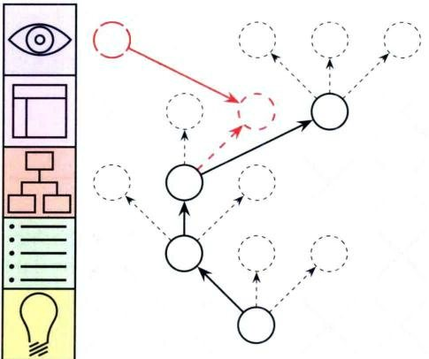
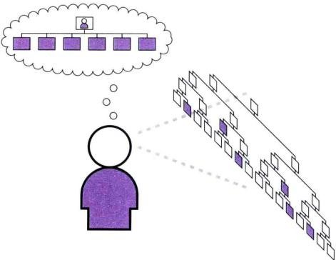
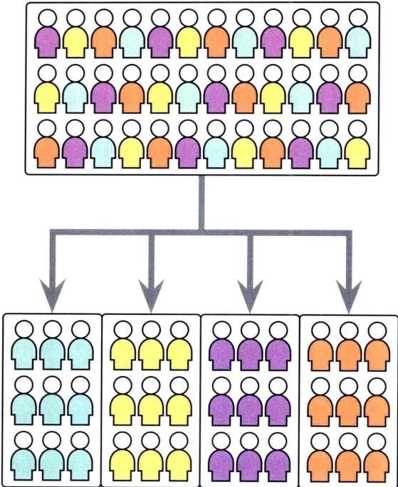
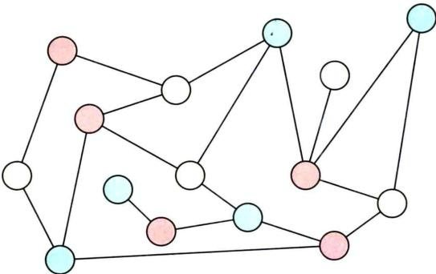
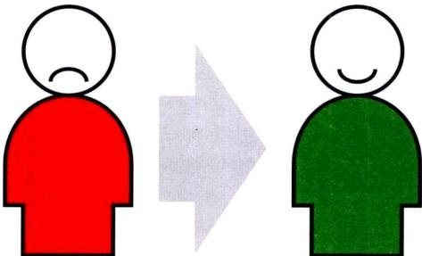
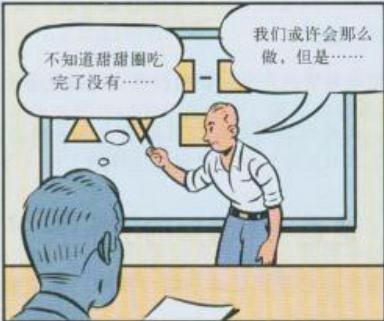
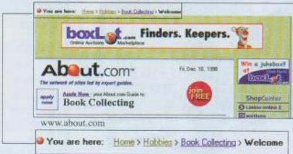
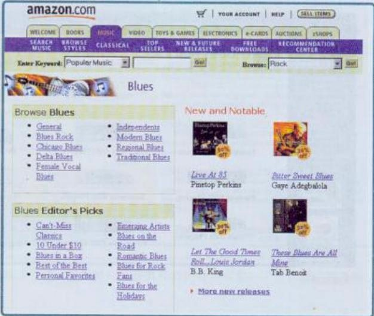
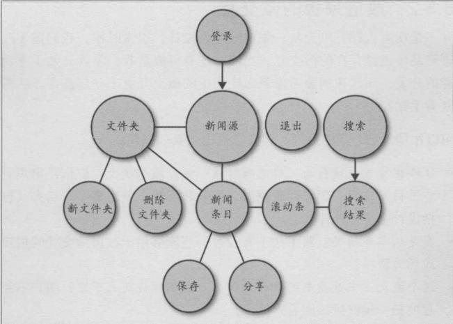
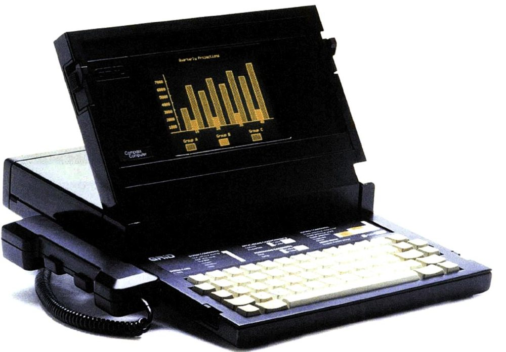
5. Source Bookshelf
Suggested reading order: Krug, 《點石成金》 (the easiest way in) → Garrett, 《用戶體驗要素》 (framework) → Johnson, 《認知與設計》 (principles) → Colborne, 《簡約至上》 → Cooper, About Face 4 (reference book) → Saffer, 《微交互》.
Show 39 titles
- About Face 3：交互設計精髓 - About Face 4：交互設計精髓（中文彩版） - Android 交互視覺設計規範 - 贏在用戶：Web 人物角色創建和應用實踐指南 - Don't Make Me Think（英文第 2 版） - UI 羣英匯：用戶體驗、交互與視覺設計方法論 - Web 界面設計 - [021]形式感：網頁視覺設計創意拓展與快速表現 - [039]關鍵設計報告：改變過去影響未來的交互設計法則 - [040]點石成金：訪客至上的網頁秘籍 - [061]認知與設計：理解 UI 設計準則 - [066]簡約至上：交互設計四策略 - [095]見微知著：Web 用戶體驗解構 - [137]與世界 UI 設計師同行 - [211]UX 設計之道：以用戶體驗為中心的 Web 設計（第 2 版） - [253]UI 設計黃金法則：觸動人心的 100 種用戶界面 - Sexy Web Design：Creating Interfaces that Work - 用戶體驗的要素：以用戶為中心的 Web 設計 - 網頁設計（Web Designer eMag） - 點石成金：訪客至上的網頁設計秘笈 - iOS 9 界面設計規範剖析及實戰 - 不要讓我思考（Don't Make Me Think） - 贏在用戶：Web 人物角色創建和應用實踐指南 - 軟件觀念革命：交互設計精髓 - 一目瞭然：Web 軟件顯性設計之路 - 就這麼簡單：Web 開發中的可用性和用戶體驗 - 微交互：細節設計成就卓越產品 - 怦然心動：情感化交互設計指南 - 用戶體驗度量 - 用戶體驗要素：以用戶為中心的產品設計（原書第 2 版） - 眾妙之門：網站 UI 設計之道 - 瞬間之美：Web 界面設計如何讓用戶心動 - 破繭成蝶：用戶體驗設計師的成長之路 - 簡約至上：交互設計四策略 - 網頁設計創意書 - 認知與設計：理解 UI 設計準則 - 認知與設計：理解 UI 設計準則（第 2 版） - 贏在用戶：Web 人物角色創建和應用實踐指南 - 體驗·度：簡單可依賴的用戶體驗（彩版）6. Study Cues
- Use Garrett's five planes to analyse your school website: what problems does each plane have?
- Write a persona for a campus food-ordering app: name, goals, pain points, context of use.
- Do the "trunk test" on any website: open a random page. Can you answer "What site is this, where am I, where can I go"?
- Find a complicated settings page and redesign it with the four strategies: remove, organise, hide, displace.
- Take apart a microinteraction you like (for example a like animation) and write down its trigger, rules, feedback and loops.
- Invite three classmates to complete a task while thinking aloud, and note where they get stuck.
7. Each Book
Each book in the bookshelf is described below. Every title above links to its section.
About Face 3：交互設計精髓
Original title: About Face 3: The Essentials of Interaction Design, 3rd edition
Author: Alan Cooper
Scope. This is the method book for goal-directed design. The preface sets the problem in the post-industrial age: copying software costs almost nothing, and the development money saved often comes back as clumsy behaviour. Cooper argues that interaction design is at once a blueprint for programmers, a basis for managers to track progress, and a source of user motivations for marketing staff. Read it before you build personas, to get clear on "whose goals are we designing for".
Main ideas
- The industrial age competed on cutting manufacturing costs; the software age competes on whether behaviour works and feels right to people.
- Interaction design has moved from after-the-fact fixes and trial and error to a practice that can judge which behaviours will succeed.
- Personas, scenarios and goal-directed design are the core tools of this practice.
- "It is impossible to know what users want" usually means the designer has not done qualitative research yet. Cooper's team goes into fields such as finance, health, medicine and human resources to understand motivations.
- Adding features at will raises everyone's cognitive load and navigation cost; a feature that pleases one group can lower another group's satisfaction.
Methods
- First write down what the finished software will look like and how it will behave, then hand that to programmers to build, and use the description to check progress.
- Choose a primary persona, and let their attitudes, abilities and context of use decide which kind of person the product serves.
- For every feature you add, ask whether it reduces or increases the navigation cost for the other users.
- Present research findings to design, development and marketing together, so the three groups do not each talk about a different "user".
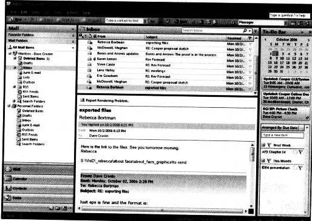
Study cues
- In your own words: why is "writing fewer lines of code" not always a saving in a software product?
- Pick an app you use often and point out a feature that serves only a few people but makes everyone else take an extra step.
About Face 4：交互設計精髓（中文彩版）
Original title: About Face: The Essentials of Interaction Design, 4th edition
Author: Alan Cooper
Scope. The 4th edition admits that personal software in 1994 was mostly address books and spreadsheets, while today users carry handheld devices to play music, take photos, read the news and control their homes. The book has two parts, goal-directed design and interaction details, and covers user research, usability testing, embedded systems, control mapping, and visual design and branding. As you read this edition, notice how it applies the old goal-directed process to phones and irreversible actions.
Main ideas
- The 1st edition was a manifesto against hard-to-use software; the 4th edition has to deal with users who already live immersed in digital media.
- The goal-directed process runs from research and modelling to detail. Cooper's colleagues wrote on market research, usability testing, embedded systems, control mapping and visual branding.
- On handheld interfaces, the title of a list or grid usually sits in the middle, Back on the left and function buttons on the right; Android calls this bar the action bar.
- Some controls can be used only once and cannot be undone. The book uses an ejection seat as the example: once the lever is pulled, the pilot leaves the cockpit with the seat, and there is no second chance.
- The examples come from design projects for medical, data and enterprise clients, not just website home pages.
Methods
- First work out which stage of the process this piece of design belongs to: research, personas, usability testing, or controls and visuals.
- When drawing a phone's top bar, mark which side Back, the title and the actions go on, and write down what the platform calls them.
- For an action that cannot be undone, design it as a clearly one-off action; do not make it look like an everyday button.
- While reading the principles, compare them with the Cooper figures in the book to see how each principle lands in a real project.
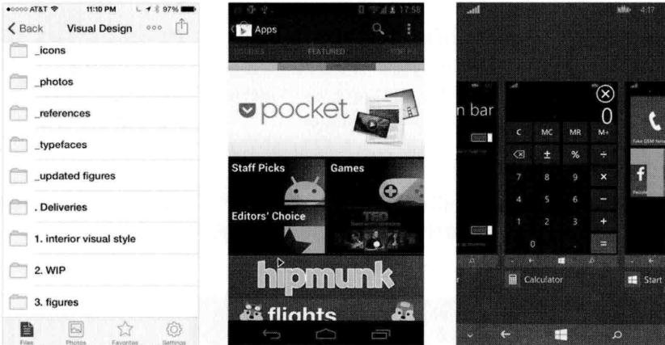
Study cues
- Compare the top bar of an iOS screen and an Android screen: where are Back, the title and the main action?
- Name a product action that "cannot be undone once done", and explain how it should be kept apart from everyday buttons.
Android 交互視覺設計規範
Scope. These are visual guidelines for icons and widgets from around Android 2.0, not a user research method. They set the style, safe area and export sizes for launcher icons, menu icons, status bar icons, tab icons and widgets, and come with Photoshop templates. When making icons for an Android assignment, use them to check sizes and lighting; do not treat them as a book on process design.
Main ideas
- Each icon needs a separate version for each screen density; for example, a launcher icon is 72×72 pixels at hdpi and 48×48 pixels at mdpi, exported as a transparent PNG.
- The icon itself must sit inside the frame, with the outer area left for shadows and special effects; square icons get a smaller frame so that all icons look the same visual weight.
- Menu icons (shown after pressing Menu) are drawn flat and front-on, without 3D perspective; there is a 6-pixel safe area inside the 48×48 frame, and rounded corners are used on suitable shapes.
- Status bar icons are smaller (25×25, with a 2-pixel safe area around them) and higher in contrast; only phone-related icons use a colour fill.
- Widgets must share one set of shadows with the other elements on the home screen, and have standard sizes in landscape orientation as well.
Methods
- Draw the basic shape in Illustrator first, then bring it into Photoshop, scale it to the specified size, and add effects in this order: front gradient, inner shadow, outer glow, inner bevel.
- Keep the core graphic inside the safe area; only glows and shadows may extend into it.
- Check against the "do and don't" examples: perspective, rounded corners, safe area and export format.
- For widgets, first match the standard landscape sizes, then check that the shadows match the home screen.
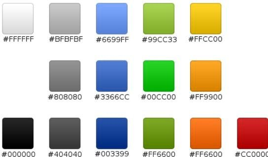
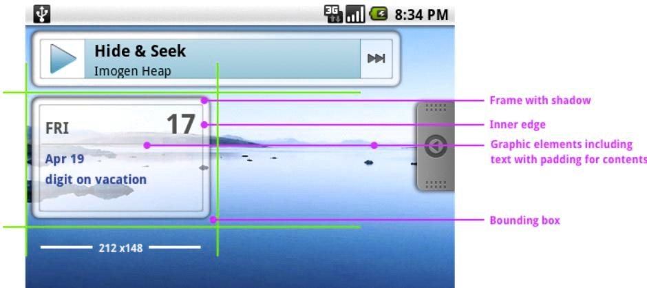
Study cues
- What are the frame sizes and safe areas for menu icons and status bar icons? Which kind uses colour?
- Sketch a 48×48 menu icon, marking the core graphic and the 6-pixel outer ring where shadows may go.
贏在用戶：Web 人物角色創建和應用實踐指南
Original title: The User Is Always Right: A Practical Guide to Creating and Using Personas for the Web
Authors: Steve Mulder, Ziv Yaar
Scope. This book turns personas from a slogan into steps you can carry out: business results depend on users, you are not your user, you must have direct contact, and research findings must be able to drive decisions. The sample persona, Francis, is a first-time home buyer; the front and back of her card separate her personal description, her goals, and what the website hopes she will do. Use it after interviews, to gather scattered quotes into one persona card you can take into a meeting.
Main ideas
- If user-centred design stays a slogan, meetings still go round in circles; personas exist so that research findings can be used to make design decisions.
- A persona must state both user goals and business goals. Francis comes to the site to understand how buying a home works; the company wants her to complete particular actions.
- The fathers of the persona are Alan Cooper and Robert Reimann; this book carries the tool into everyday use on website projects and explains that it is still evolving.
- A persona card should let people see "she doesn't know where to start", not just demographics.
- Talking about user needs in meetings is not enough; decisions still have to be made against real users.
Methods
- Check the project in five steps: do results depend on users, does the team treat itself as the user, is there direct contact, can the findings be acted on, are decisions based on research.
- For each persona, write a personal description, goals for the visit, what the business hopes for, and information relevant to the task (in the book's example, home-buying information).
- Make the persona into a two-sided card and bring it to the meeting that discusses "where to start".
- After the meeting, record which decisions changed because of the card, and which were still just the preference of the most senior person.
Study cues
- In the style of Francis, write four lines for "someone applying for a dormitory place through the school system for the first time": who she is, her goal, what the site wants her to do, and where she gets stuck.
- Think back to a group discussion: did anyone substitute their own habits for the user's? If you had a persona card, which sentence could have stopped that?
Don't Make Me Think（英文第 2 版）
Original title: Don't Make Me Think: A Common Sense Approach to Web Usability, 2nd edition
Author: Steve Krug
Scope. This is the 2nd English edition of Don't Make Me Think. The author kept the book short on purpose, hoping people would finish it on a flight, and wanted the book's own layout to demonstrate what it teaches. The 2nd edition is still about principles rather than technology. The contents run from how people really use the web, to signpost-style navigation, cutting needless words, and what to do when your boss insists on the wrong solution.
Main ideas
- Being short and quick to read is one of the goals; some people finish it in about two hours. The author sees this as practising what the book preaches.
- Because it deals with principles, not one year's technology, the 1st edition still held up years later; the author only agreed to rewrite it for the 2nd edition after teaching it.
- The main threads in the contents include: how people actually use web pages, choosing with rough categories like "animal, vegetable or mineral", cutting unnecessary words, and street signs and breadcrumbs.
- Another chapter deals with "my boss wants me to do it this way": you know what is right, but stakeholders insist on something else.
- Small quizzes are scattered through the book. They first ask whether you know what the site is and where to start; the answers come on later pages.
Methods
- Open an unfamiliar web page and take ten seconds to answer: what site is this? Where do I start? If you can't, mark the elements that made you hesitate.
- Write navigation as street signs: where you are now and the next places you can go, not a pile of links of equal rank.
- Cut sentences that don't help a decision, then read again and see whether the task got shorter.
- When a proposal is rejected, write down the reasons the other side insists on and the cost users will pay, ready for the kind of persuasion scenes in Chapter 12.
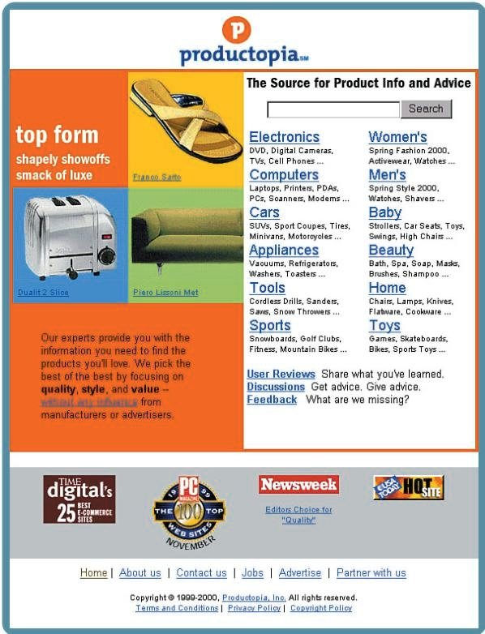
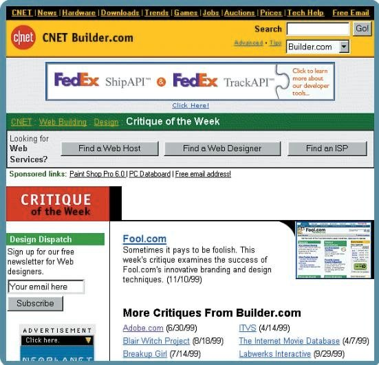
Study cues
- Pick an English website and write two sentences: What is this site? Where do I start? Which one takes you more than three seconds?
- Cut a paragraph of explanation on that page down to only the words needed to act, and count how many words you removed.
UI 羣英匯：用戶體驗、交互與視覺設計方法論
Scope. This is a collection of project write-ups by practitioners in mainland China, not a theory book by a single author. It is organised into web, software and icons. Chapter 1, by Yu Zongbo of Alibaba, covers an e-commerce redesign: from requirements, typical users, filter architecture and flows, and paper prototypes, to internal review and user research. Later chapters cover graphics for QQLive, game login screens and icon drawing. Use it to see how a commercial project delivers concrete documents.
Main ideas
- Listen to users, but also choose. Following users completely and constantly educating users are both untenable.
- Online behaviour in e-commerce is tied to offline buying and payment habits. When there are too many search results, users want filters, which means interaction and search teams must build faceted navigation together.
- Taobao's 2010 home page raised and enlarged the search box and changed horizontal navigation to vertical; research reported that about 77% of people saw the search box by the 4th second.
- Interaction documents include concept diagrams, architecture diagrams, flow charts and paper prototypes, and only then come visuals and front-end work.
- Peace of mind for large payments does not come from one sentence on the detail page; it also involves resources such as instalments, prepayment and cash on delivery.
Methods
- Write one page on the project's current state: the existing interface, the areas to strengthen or weaken, how traffic is expected to change, and why.
- For a filter feature, first draw the logical architecture, then the task flow, then make a paper prototype.
- Compare design drafts internally first, pick representative options, take them to user research, and only then finalise.
- If you use a drawing tablet for icons or game interfaces, you can lay in flat colour along the outer outline instead of tracing paths with the pen tool first.
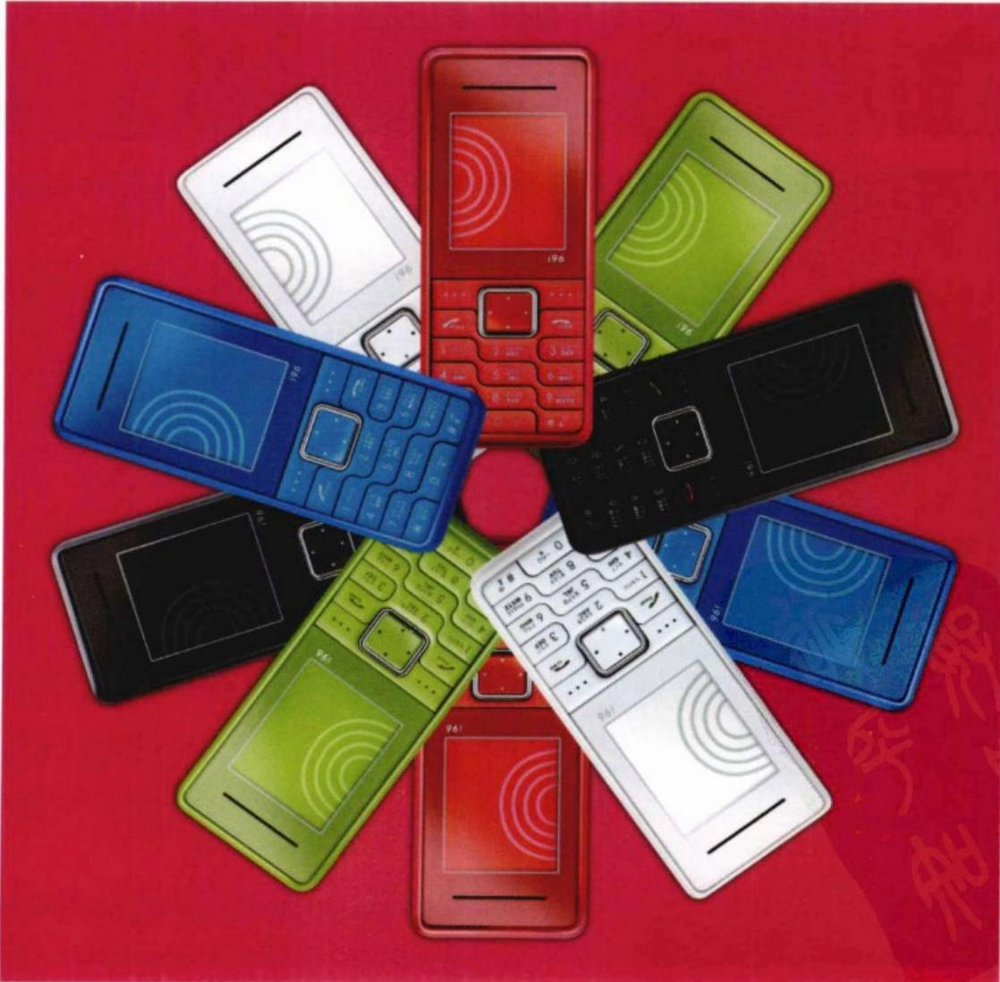
Study cues
- Write three filter dimensions for a product list, and draw a flow for "how a user adds and then removes a condition".
- For your next design draft, which two things should the internal review look at, and which task should user research ask about?
Web 界面設計
Original title: Designing Web Interfaces: Principles and Patterns for Rich Interactions
Authors: Bill Scott, Theresa Neil
Scope. The two authors gather their experience of rich internet applications from the Sabre years and of the Yahoo! Design Pattern Library into patterns and anti-patterns. The subject is rich interaction on the web; it is neither an information architecture textbook nor a visual design book. In 2004 Gmail and Google Maps used the technique later called Ajax to pan and zoom without reloading the whole page, in contrast to MapQuest at the time, which reloaded with every move.
Main ideas
- The line between web and desktop has blurred, but rich interaction on web pages still has its own conditions. In-page editing comes from the desktop, but on the web it follows a different set of habits.
- A design pattern describes a recurring problem and the core of its solution; an anti-pattern is a common mistake to avoid.
- Patterns become a vocabulary for talking with clients and for designing new systems or reworking old ones.
- The book's principles support these patterns and discuss best practice in the web environment.
- Developers only dare to use the relevant technologies in everyday products once browsers support them widely.
Methods
- For every interaction problem, first write "what is the recurring problem", then the core of the solution, instead of just pasting a finished picture.
- Compare the desktop approach with the web approach: for in-page editing, drag and drop or live updates, how do you show state without a full page reload?
- Collect anti-patterns: list the places in your product where "every small action reloads the whole page".
- When talking with developers, agree on pattern names first, then discuss visuals.
Study cues
- In two sentences, describe a web interaction you have made: what was the recurring problem, and what was the core of the solution?
- Find an action that still reloads the whole page, and explain what state changes users would need to see if it were done within the page.
形式感：網頁視覺設計創意拓展與快速表現
Scope. The author works in Tencent's design team TGideas, and the book grew out of a popular tutorial on the ZCOOL site; it calls itself an emergency handbook for visual form. It does not teach front-end coding, nor does it cover composition or colour theory systematically. It is aimed at web designers who must produce campaign pages in a short time: a strong theme, fast output, eye-catching visuals. Portals, platforms and brand sites are updated on long cycles; campaign pages often stay online for only a week to a month, but there are a great many of them.
Main ideas
- The type of site decides the emphasis: portals stress indexing, platforms stress interaction, brand sites stress concept and multimedia, and campaign sites stress precision, speed and bold visuals.
- Everyday campaign pages depend more on visual form than long-term products do, because they serve one marketing push, not a complete information architecture.
- The book's ten methods target creative blocks. Most cases are game web pages, while the showcase section is broader, and the methods can be carried over to campaigns for other products.
- Sticking to a width of about 1000 pixels means giving up the picture for phone and tablet users, so full-screen, multi-device approaches have become a trend.
- Long-term information (data on character classes, races, dungeons, items and the like) suits a white background that wears well; campaign blocks update quickly, so their visuals can be bolder.
Methods
- When you get a brief, classify it first: is this a portal, a platform, a brand site, or a campaign that comes down within a week? Then decide how bold the form can be.
- A campaign page should focus on one theme. Produce, against the clock, one draft that "can be seen at a glance"; do not look to this book for interaction flows.
- Check width: besides the fixed desktop width, look at least once at whether the main visual survives on a narrower screen.
- On the same page, treat "information that stays for a long time" separately from "this campaign", and keep the information area on white with less stimulation.
Study cues
- Take a game or brand campaign page and circle "the campaign that lives for one week" and "the information that stays a long time". Is the visual intensity of the two kept apart?
- Redraw a 1000-pixel-wide main visual as a narrow-screen sketch, and write down which element must stay.
關鍵設計報告：改變過去影響未來的交互設計法則
Original title: Designing Interactions
Author: Bill Moggridge
Scope. This is an oral history of interaction design by a co-founder of IDEO. Through interviews and commentary, he introduces more than forty pioneers around about ten themes, from the mouse, the desktop and the personal computer to the internet and physical interfaces. The aim is to see how these people discovered problems; it is not a step-by-step manual. Gillian Crampton Smith answers "what is interaction design?" in the book.
Main ideas
- Interaction design as a discipline is linked to Moggridge's experience designing an early laptop, and to his way of bringing creativity and technology together.
- Technology moves from function to community; good interaction design needs its own language, not just interface flows.
- Once computing quietly enters everyday objects, how people control these bits and what form the bits take are questions the book keeps asking.
- Cases include a watch with a radio, chips that cause inconvenience, why the mouse, and why the desktop.
- Service systems are also covered; Fran Samalionis of IDEO discusses the process and ideas of service design.
Methods
- For each interview, note only three things: the constraints of the time, the people the designer observed, and the interaction form that remained (the mouse, the desktop or something else).
- Write about "the interface" and "human behaviour" separately. The book stresses that many discussions stop at surface flows and say little about behaviour.
- When looking at early office computers, ask whether they went beyond what people then expected of office tools.
- Use this book to build a timeline; do not try to extract a one-size-fits-all checklist from it.
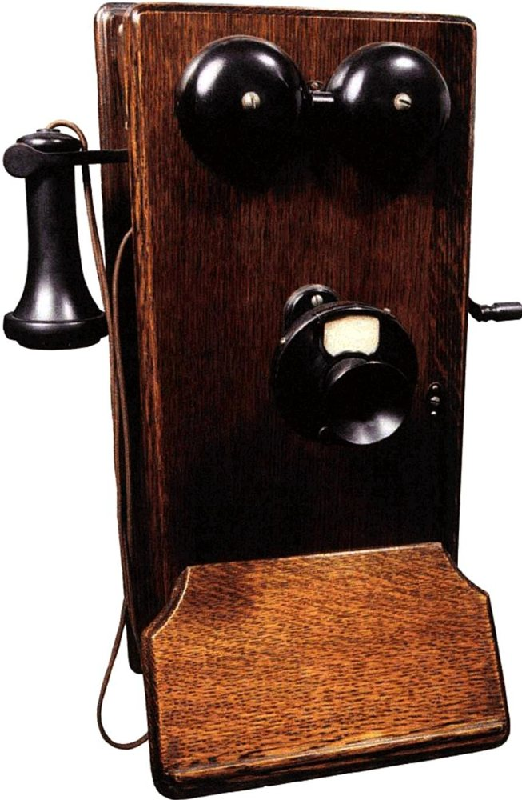
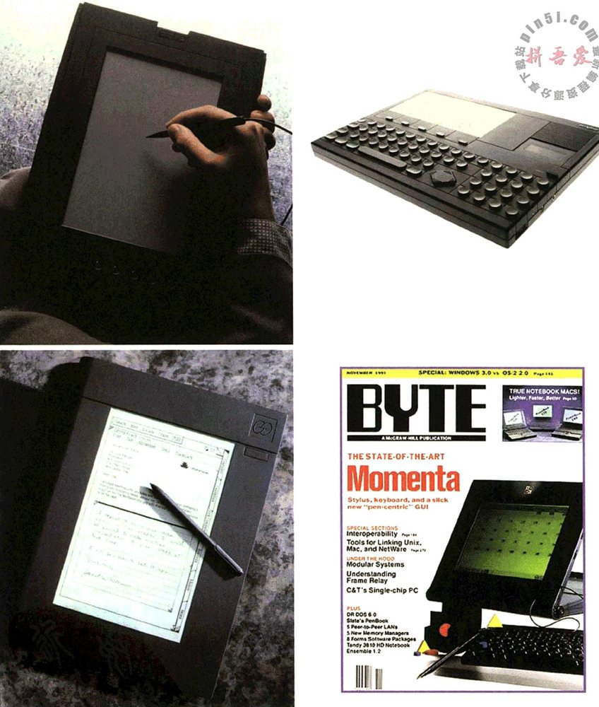
Study cues
- In three sentences, retell why the mouse appeared, or why the interface became a desktop. Write only reasons given in the book.
- Choose a digital product you touch every day, and write down which "old tool" it corresponds to and how people originally expected to use it.
點石成金：訪客至上的網頁秘籍
Original title: Don't Make Me Think: A Common Sense Approach to Web Usability, 2nd edition
Author: Steve Krug
Scope. This is the preface and related chapters of the Chinese edition of the 2nd edition of Don't Make Me Think. Krug explains what the 2nd edition adds: explanations rewritten after his workshops, Chapter 12 "my boss wants me to do it this way", and the material on goodwill toward visitors (Chapter 10) and accessibility (Chapter 11) that had been cut earlier. To make room, he asked readers of the 1st edition to vote on what could be removed. The long section on user testing was squeezed into one chapter, and the rest was put on his website to read for free.
Main ideas
- The principles have not been made obsolete by pop-up ads or phishing; the 2nd edition still does not become a book on web applications, which Krug thinks someone else should write.
- The new content falls into three kinds: points he only learned to explain clearly later, how to say no to a boss or client, and goodwill and accessibility.
- Examples include the marketing department demanding a pile of personal details before people can subscribe, with the result that many people use fake names.
- If a tab bar has no selected tab, users may not even notice in the first few seconds that it is a set of tabs. The book uses Quicken.com as an example.
- Staying short is the book's rule for itself: adding pages means cutting pages.
Methods
- Check navigation tabs: when you land on the page, is one tab already selected?
- List the fields that "stakeholders insist on but that produce junk data", and prepare an alternative you can take to the meeting.
- If you cannot run full user testing, at least boil the testing down to a few points everyone needs to know, rather than a very long report.
- When redesigning, first ask old readers or old users what can be cut, then decide what to add.
Study cues
- Find a website with tab navigation, ignore the colours and look only at the shapes: can you point out at once "which page am I on now"?
- Write three sentences you would say to a marketing colleague who insists on a longer sign-up form, mentioning the consequences of fake data.
認知與設計：理解 UI 設計準則
Original title: Designing with the Mind in Mind: Simple Guide to Understanding User Interface Design Rules
Scope. This book explains where interface guidelines come from, and why they cannot be followed like a recipe. It compares two well-known sets of guidelines, Shneiderman's and Nielsen and Molich's, and shows that they are similar because both come from human cognition, not because one copied the other. Chapter 1 is about how we see what we expect: experience, context and goals all change perception. Read it before memorising any checklist, to understand how to choose when guidelines conflict.
Main ideas
- Guidelines usually describe goals, not actions. Several can apply to the same situation and conflict with each other, for example wanting many features yet easy learning, or wanting WYSIWYG yet access for blind users.
- Guidelines are like laws: they must be interpreted by people who understand the principles and have experience, not applied line by line.
- Many lists do not explain their basis. Norman's rules from the 1980s, based on cognition and error, are one of the few examples with a theoretical background.
- People see what they expect to see. When looking for a campus map on a website, objects related to the goal attract the eye and the cursor, and the rest are easily ignored.
- Instructions can be both short and clear. The book compares how Jeep shortened its "find a dealer" instructions between 2002 and 2007.
Methods
- When two guidelines clash, write down the goal of this screen, then decide which guideline serves that goal.
- When designing an interface for finding things, make the goal-related objects prominent, and accept that the rest will be ignored.
- Shorten a set of instructions round by round, each time keeping only the words needed for the next step, as in the Jeep dealer example.
- Avoid objects that can be read two ways; with different goals, contexts and user experience, people see different things.
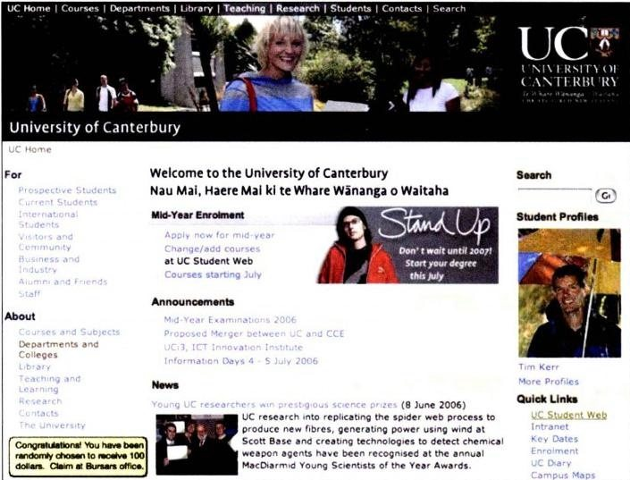
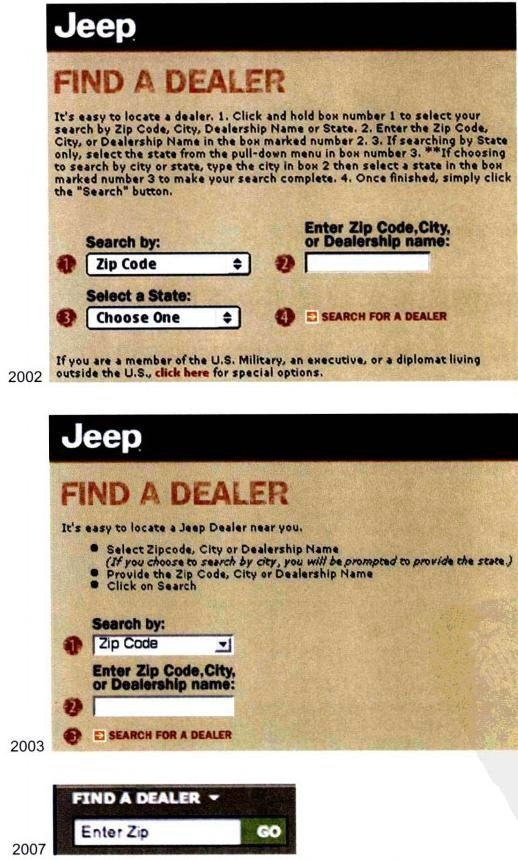
Study cues
- Write down a pair of conflicting goals (for example many features and easy learning), and explain which one you satisfy first on a given screen, and why.
- Rewrite four lines of operating instructions as two, so that people still know where to press first.
簡約至上：交互設計四策略
Original title: Simple and Usable Web, Mobile, and Interaction Design
Scope. This book uses products such as the Flip video camera to show that simple means users find it easy to use; it does not mean a short feature list, or reports that are easy for management to produce. The author distinguishes experts, willing adopters and mainstream users, and argues for designing for the mainstream. The later part gathers the approach into strategies that can be used together: remove, organise, hide, and displace by rearranging the layout.
Main ideas
- The Flip had only a few buttons and a flip-out USB plug, with no driver disc; it targeted people who wanted to shoot casually and post to YouTube, not people making home blockbusters. Sony and Panasonic were still adding movie-style effects at the time.
- What Pogue calls "bragging value" makes people enjoy being surrounded by extra features; after 2008, extra features became a burden. Junk features in software raise maintenance costs and stop people finding what they really need.
- An intranet example: to get reports generated automatically, management shifted the form-filling onto the sales staff. It was simple for managers, but not for users.
- Of the three kinds of user, mainstream users want a sense of control. Expert users should not drive the feature list.
- Removing what is unnecessary, organising what stays and hiding what is not core can be used together; displacing means rearranging the interface.
Methods
- When writing user stories, record frustrations first and advanced capabilities second. The book's PVR example: being able to watch and record several programmes at once ranks below solving common frustrations.
- Label each feature: remove, organise into an obvious place, hide on the next level, or move to another screen.
- Describe the same process in three sentences, one each from a manager, an engineer and a user, and see who the "simplicity" actually lands on.
- Get out of the office and observe what mainstream users actually do at work, at home and outdoors.
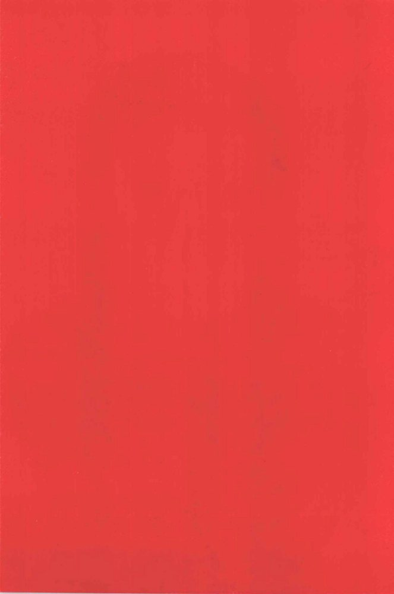
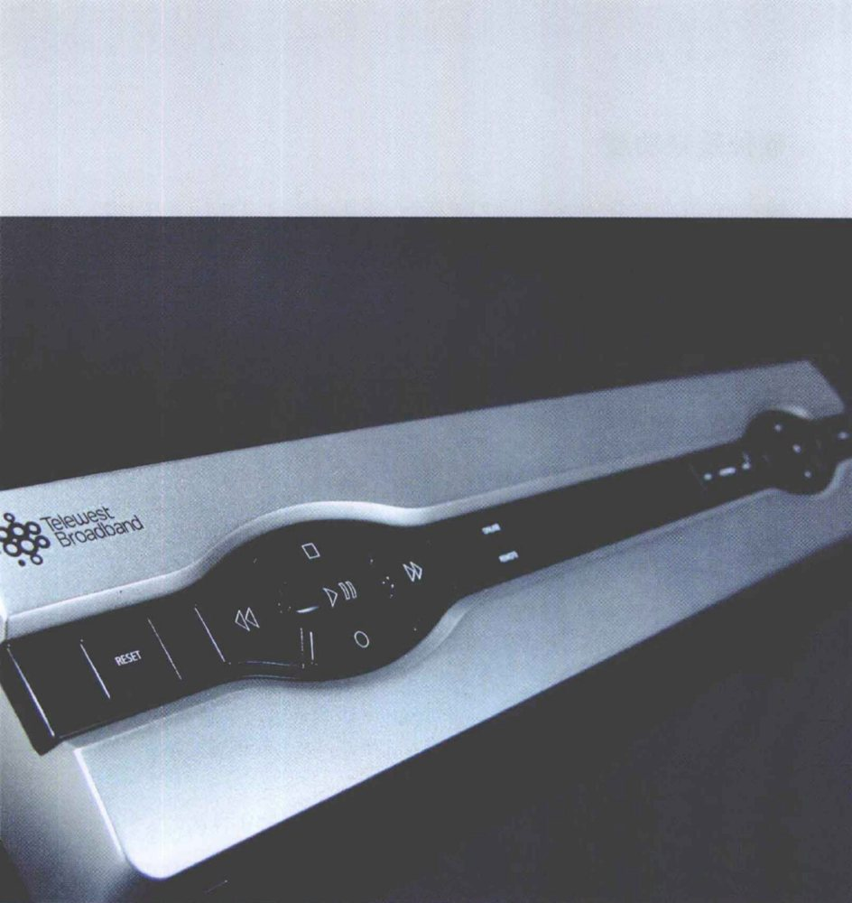
Study cues
- Pick an appliance or app with lots of features, and write one change you would make for each of "remove, organise, hide, displace".
- Describe a process that saves managers effort but makes front-line users fill in an extra page of forms.
見微知著：Web 用戶體驗解構
Author: Li Qing
Scope. Working at Alibaba and in consulting, Li Qing found that iteration moved too fast for every detail to be lab-tested. This book breaks a site down from overall layout and colour, to the login area, content area and ad area, and then to buttons, feedback, CAPTCHAs, type and tone of voice. Each item is matched with research findings, the practice of well-known sites and key design points. When you are revising one part of an interface, turn straight to that section rather than reading the theory from the start.
Main ideas
- A website's experience is a subjective impression formed by its purpose, brand, how smoothly it operates, speed and details together, including whether people can finish their task, whether they like it, and whether they want to come back.
- A single detail shows up in sign-up rates and page views. Building up solutions for each detail in advance reduces the back-and-forth revisions with product managers.
- The book runs from the whole to the parts; if you are changing only one area, you can skip chapters.
- Layouts such as wide-left, narrow-right suit left-to-right, top-to-bottom scanning. They work for sites with lots of content and clear categories, letting people find content by following the navigation.
- Interaction designers, researchers, visual designers and product managers use the same deconstruction; each simply applies it to drawing wireframes, making comparisons or judging options.
Methods
- Before a redesign, break the page into a list: layout, login, content, ads, buttons, error feedback, CAPTCHA, type, tone. Dig into only one item at a time.
- For each item, note: what research or the literature says, how well-known sites do it, which option your site chooses, and why.
- When judging layout, let "is there a lot of content, are the navigation categories clear" decide whether to use wide-left, narrow-right, instead of first picking columns that look nice.
- When you can't test, use live data to compare two detail solutions that are already online.
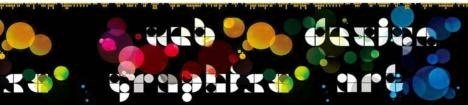
Study cues
- Break a website you visit often into five elements (layout, login, buttons, error messages, tone), and write one sentence on how it currently handles each.
- Would you use the same column layout for a content-heavy site and a campaign page? Give one reason for each.
與世界 UI 設計師同行
Scope. This is a portfolio collection of graphical user interfaces, arranged by type of app: restaurants, weather, calendars, travel, transport, music, icons and various GUI kits. Each entry usually gives the designer's name and region. There is no unifying method chapter. Use it to compare side by side "how different apps of the same type can be"; for example, the book shows several weather apps in a row.
Main ideas
- The contents page is itself a classification: weather, calendars, city guides, airports, public transport, cycling, music, photography, icons and interface kits are shown separately.
- The same function (weather or calendar) can have very different main screens. What you compare is the information hierarchy and the entry points for actions, not whose illustration is more detailed.
- Works come with their authors and sources, for example Gergely Hangyás from Hungary and Gianpaolo Tucci from Italy.
- Some designs draw the route as an image, treated as an extra service rather than a basic step.
- Later sections also include phone themes, minimal icons and sets of interface components. They can serve as visual vocabulary but should not be treated as guidelines.
Methods
- Pick one category (only weather, or only calendars), put three main screens side by side, and write down the first action each one prompts you to take.
- Record the designer and link so you can find the original later; don't just save screenshots.
- Ask: if the decoration were removed from this screen, would the core task still be there?
- Split your notes into two columns: "structure I can borrow" and "skin that belongs only to this brand".
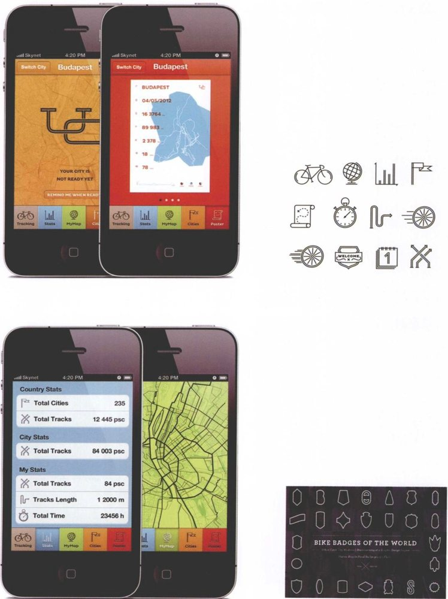
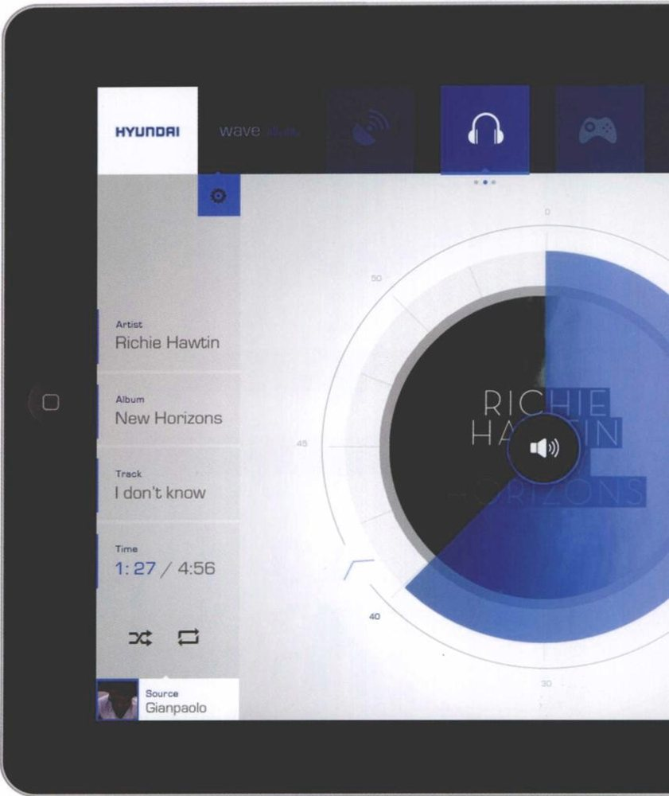
Study cues
- Choose two of the weather apps in the book, and write one sentence each on the first action after opening them.
- Choose one page of work and write separately: which part is the task structure, and which part is a visual skin that could be swapped out.
UX 設計之道：以用戶體驗為中心的 Web 設計（第 2 版）
Original title: A Project Guide to UX Design: For User Experience Designers in the Field or in the Making, 2nd edition
Authors: Russ Unger, Carolyn Chandler
Scope. This is a project handbook for people who don't know how to get user experience work going in a real company, and for people who want to move from visual design into this role. The two authors provide tools and the situations to use them in, and suggest reading at three depths: "surfing, snorkelling and deep diving". The 2nd edition adds remote research tools, Lean UX, designing for mobile devices, and approaches to the visual and emotional layer.
Main ideas
- A UX role touches content strategy, research, kick-off meetings, design, prototyping and user testing all at once; the book gives a core set, not an encyclopedia.
- Writing the book is compared to the design process: research, immersion, talking to people and experts, generating concepts, building structure, and only then going into detail.
- Curiosity, passion and empathy are placed in Chapter 1 as the starting point for doing this work.
- Requirements can be assessed with a prioritisation table that shows importance and feasibility together, each rated low, medium or high.
- Methodology can be adapted: the cases in the book are a starting point for making a version that fits your own project.
Methods
- At the start of a project, write down whether you are surfing, snorkelling or deep diving, and use that to decide which layer of tools to read this week.
- Make a prioritisation table: each requirement gets an importance score and a feasibility score; do first what is both important and achievable.
- Of the four areas new in the 2nd edition (remote research, Lean, mobile, emotional visual design), go deep only on the one that relates to your project.
- At the kick-off meeting, first agree on "which users we are learning about this time", then bring out the tools.
Study cues
- List five requirements for your course project, mark each low, medium or high for importance and feasibility, and circle the two you would do first.
- Are you surfing, snorkelling or deep diving this week? Write down one concrete action that follows (for example one remote interview, or one mobile flow).
UI 設計黃金法則：觸動人心的 100 種用戶界面
Original title: Digital Design Essentials: 100 Ways to Design Better Desktop, Web, and Mobile Interfaces
Scope. This book is organised around the interfaces of one hundred kinds of digital product, from the command line and graphical interfaces to natural interfaces, multi-touch and organic interfaces. It covers desktop, web, mobile and TV interfaces viewed from about ten feet away. Each entry gives the key features of one product type (notepad, email, image editor, shopping cart, payment, forum, phone clock and so on). It is for learning the types, not a redesign diary for a single product.
Main ideas
- The user interface is the point of contact between people and digital products. The book quotes Steve Jobs as a reminder: design should show how a product works.
- The front of the book lists a set of lessons to compare the cases against: lightweight, simple, operable, consistent, feedback, error tolerance, user-led.
- Desktop examples include Microsoft Notepad, the University of Washington's Alpine email client, Visual Studio 2012 and image editors.
- Web types run from blogs, directories, shopping carts, payment and accounts all the way to wikis, ratings, CMSs and search-optimised pages.
- Mobile types separate native apps, mobile web and hybrid apps, and list gestures, stylus, voice, Bluetooth and near-field communication separately.
Methods
- When you take on a new product type, first find the closest type among the hundred entries, copy down its key features, then adapt them to your task.
- Use the set of words at the front of the book to check a screen: can users operate it, can they recover from errors, are the main actions started by the user?
- Record platforms separately: don't merge the interface types of the same function on desktop, browser and phone into one entry.
- When looking at a case, write down "the part this type must have" (for example, cart and payment kept separate), rather than just describing the colours.
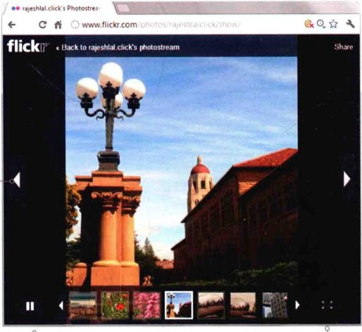
Study cues
- From the book's contents, choose a type you have never designed (for example a ten-foot interface or a knowledge base), and list three features it cannot do without.
- Look at a dashboard and point out which number uses a stronger colour. Is it the indicator users should read first?
Sexy Web Design：Creating Interfaces that Work
Author: Elliot Jay Stocks
Scope. Written by Elliot Jay Stocks for SitePoint, this book moves from interfaces in real life to interfaces on the web. The opening chapter divides the goals into what a site does, what it looks like, and usability and accessibility, and only then turns to the design process. The tone suits newcomers to the profession, stressing that an interface can be attractive and must also work. The back of the book contains adverts for the publisher's other technical books; those pages are not case studies.
Main ideas
- Interfaces existed in real objects before they existed on the web; web design must answer questions of both behaviour and appearance.
- Usability and accessibility stand alongside "what it looks like"; they are not checks added after the visuals are done.
- The design process gets a chapter of its own, used to turn goals into an interface that can be built.
- On the technical side, the book has code examples, plus sidebars such as tips, notes and warnings.
- Some spreads are adverts for other SitePoint books, such as the JavaScript primer by Kevin Yank and Cameron Adams; do not treat them as interface principles.
Methods
- Write three lines of goals for a website: what it does, what it must convey at first glance, and which aspect of accessibility cannot be skipped.
- First find an interface on a real object (a door, a ticket machine, a remote control), and write down which cue could be carried over to the web.
- When you read a code or layout example, note the "content area" and the "repeating background" separately.
- Skip the pure advert pages at the back and go back to the goal list in Chapter 1.
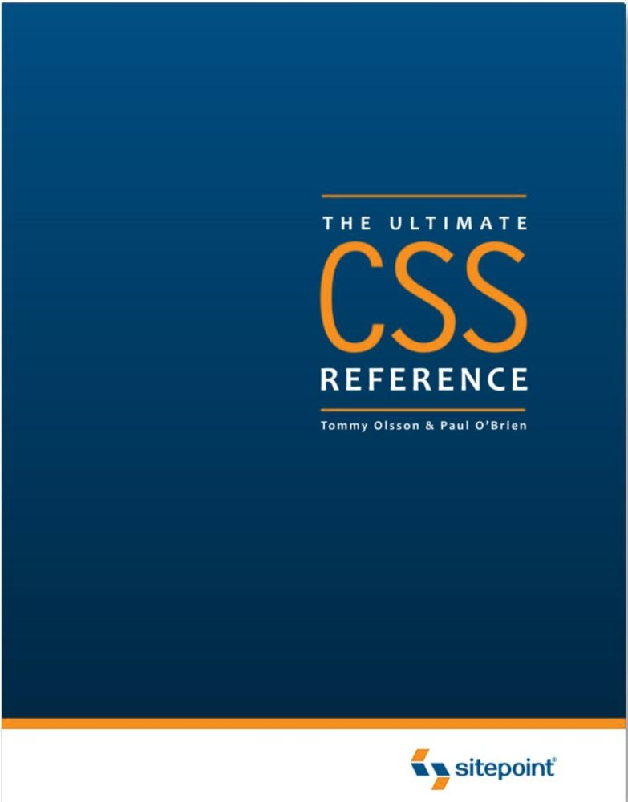
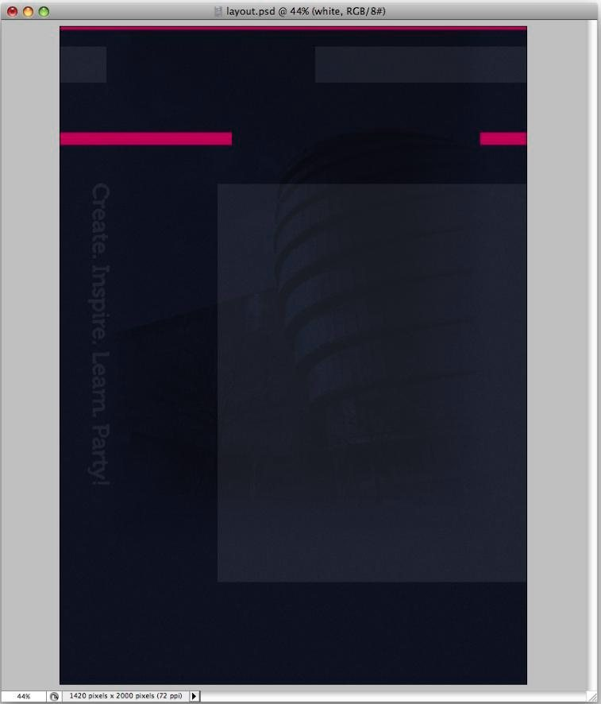
Study cues
- List the goals of your next web page in three lines: what it does, what it looks like, accessibility.
- Explain how a background image that "repeats in both directions" and one that "repeats only once" differ at the edges of the content area.
用戶體驗的要素：以用戶為中心的 Web 設計
Original title: The Elements of User Experience: User-Centered Design for the Web
Author: Jesse James Garrett
Scope. This is the website version of Garrett's five-plane model. Around 2000 he noticed that the industry was using information design, information architecture and interface design interchangeably, so he stacked strategy, scope, structure, skeleton and surface from the bottom up into one diagram. The strategy plane holds site objectives, business goals and user needs, and every decision on the planes above must trace back to it. Use it before drawing wireframes, to check whether the project has stated its strategy clearly.
Main ideas
- From bottom to top, the five planes are: strategy, scope, structure, skeleton, surface.
- User needs and site objectives make up the strategy plane, the foundation for every later decision. On many projects this plane is unclear at the start.
- The model is meant to fix confused vocabulary: one document calls something information design, another calls it information architecture, and a third calls all of it interface design.
- The book divides the elements along a basic duality, so that different roles know how their work connects with the neighbouring planes.
- Remember that users are written as specific people. The book mentions a man named David, who studied industrial design and worked at companies including Motorola and DEC.
Methods
- When starting a project, write two sentences on the current state of each of the five planes. If you can't write one of them, stop at that plane; don't start on the surface.
- On the strategy plane, write business goals and user needs separately, both specific enough to veto a feature.
- In team meetings, agree on terms first: which plane does each of you mean by architecture, skeleton and interface?
- Test requirements against a named person with a work context, instead of writing "users want convenience".
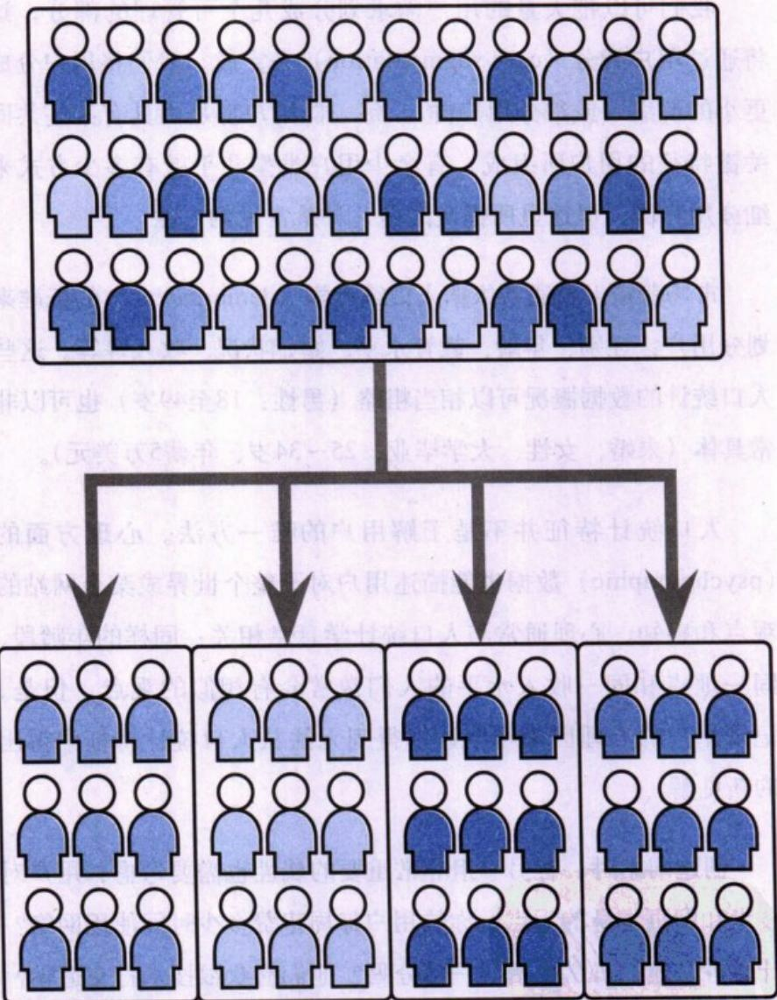
Study cues
- Write one sentence for each of the five planes for a course website. If the strategy plane only says "make it look good", rewrite it until it could veto a feature.
- Take a term you have heard (information architecture, interface, content) and explain which of the five planes it belongs to.
網頁設計（Web Designer eMag）
Scope. This material is the Web Designer e-magazine, not a book on method. The file is labelled WD 120 eMag, while the sample page header reads 71 eMag. The content is tutorials and columns: Todd Yard builds a retro shooting game and a Pac-Man-style game, Steve Jenkins handles backgrounds with CSS, and the cover is pixel art by Gary Lucken (Army of Trolls). The magazine uses standard cues to tell readers where they can click, where there is a close-up, and where there is sound.
Main ideas
- A single issue covers both game making and web techniques, aimed at hands-on web professionals.
- Cues such as "get interactive" explain what happens when you click; "Closer look" highlights how certain elements are presented; "hear this" signals sound elements.
- The CSS tutorial deals with positioning background images; its author writes both tutorials and a technical Q&A.
- The cover artist moved from games-console pixel art to client work, and pixel art is treated as a craft that can be practised over and over.
- You read the magazine to follow one issue's techniques, not to build a complete user experience model.
Methods
- When reading an issue, follow only one tutorial through to the end (background positioning, or a small game loop), and finish it before starting the next.
- Notice the magazine's own layer of cues: which part is steps, which is "look closer", and which is sound.
- For a pixel-art assignment, first limit the grid and the number of colours, and only then think about client work.
- Keep notes on tutorial steps separate from notes on that issue's showcase work, so you don't just collect pictures.
Study cues
- In your own words, explain what each of the three column types in this material does: "clickable explanation", "close-up" and "sound cue".
- Choose CSS backgrounds or a small game, and list the three steps you will follow; don't do two tutorials at once.
點石成金：訪客至上的網頁設計秘笈
Original title: Don't Make Me Think: A Common Sense Approach to Web Usability, 2nd edition
Author: Steve Krug
Scope. The main text of this volume is the 2nd English edition of Don't Make Me Think, published in Chinese as 《點石成金》. The contents run from "don't make me think" to how people really use the web, choosing by rough categories, cutting needless words, street signs and breadcrumbs, and what to do when your boss insists on a different approach. Unlike the volume with the 2nd edition preface, this one is good for working through the chapters and practising "judge for yourself first, then turn to the answer".
Main ideas
- The opening chapter asks that things be self-evident. If something can't be completely self-evident, it should at least need very little thought.
- "How people really use the web" is the premise for all the advice that follows, rather than assuming people read carefully.
- Choices can be as rough as "animal, vegetable or mineral": first help people into the right broad category, then give the details.
- Navigation is compared to street signs and breadcrumbs, answering where people are and where they can go.
- The book's exercises first ask readers what the site is, where to start and what works; the answers are on a stated page, forcing you to answer first.
Methods
- Rewrite the main choices on a home page so that only two or three mutually exclusive broad categories are left, with the details on the next level.
- Cut the filler words and self-introduction from a paragraph of explanation, keeping only short, street-sign-style phrases.
- After finishing a screen, write down your own judgement first, then turn the page to compare with others' answers, and note what you missed.
- Write breadcrumbs as "the levels you have already passed through"; don't make them a second main navigation.
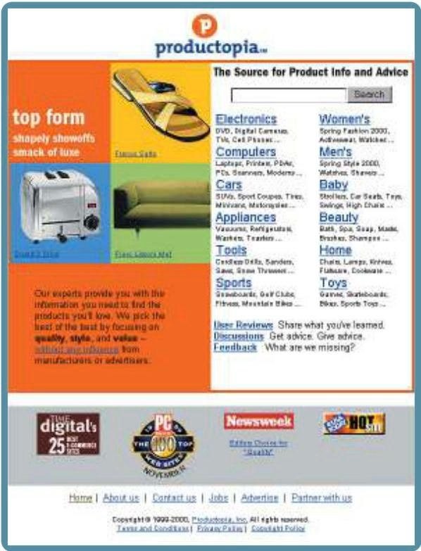
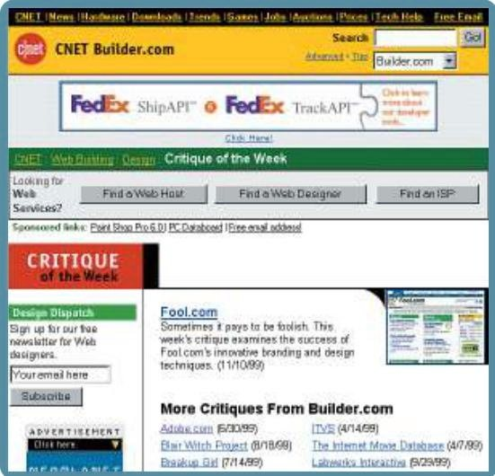
Study cues
- Change a navigation bar into two levels, "three broad categories first, then the details", and write the labels for each level.
- Cover the answers and do the "what site is this, where do I start" test, then write down the element that made you hesitate.
iOS 9 界面設計規範剖析及實戰
Scope. This book takes apart the interface components of the iOS 9 era and arranges them under UIKit's four categories: bars, content views, controls and temporary views. The first half covers the status bar, navigation bar, toolbar, tab bar and search bar; the second half covers activity views, collection views, maps, modals, scroll views, split views and tables. Use it on iOS assignments to check names and usage, rather than inventing your own set of system bars.
Main ideas
- Immersive apps such as games can hide the status bar; ordinary apps keep the time and status visible.
- The search bar has a prominent style (the text uses Mail as an example) and a minimal style (the text uses Music as an example).
- A modal view is separate from the current content, often with a translucent blur behind it; it is used to complete a self-contained task.
- Tables can be grouped or plain rows, and provide controls for adding, deleting, multiple selection and moving to the next level.
- The toolbar has a set of standard icons; tab bars, maps, collections and split views each solve a different information density.
Methods
- When drawing an iOS screen, first mark which of the four categories each part belongs to; don't draw a temporary view as permanent navigation.
- If search is the main task, use the prominent search bar; if it is a secondary entry point, use the smaller style.
- For tables, first decide between grouped and a single list, then decide whether rows have a disclosure arrow.
- Consider hiding the status bar only on immersive screens, and explain how users can see the time temporarily.
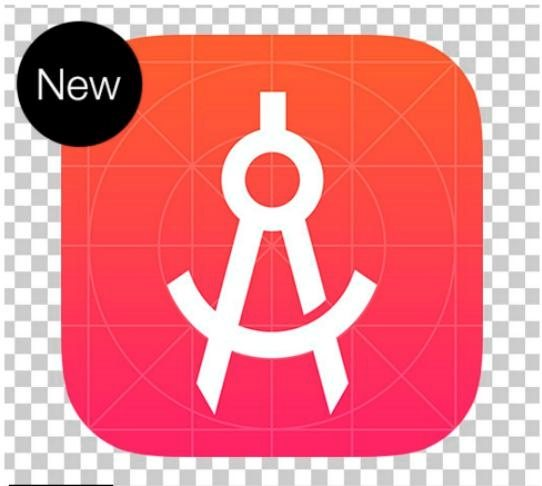
Study cues
- Draw a Mail-style screen and a Music-style screen, marking whether the search bar is prominent or minimal, and where the tab bar is.
- Explain how a modal view differs from pushing to the next level of a table, with an example of each that you have seen on iOS.
不要讓我思考（Don't Make Me Think）
Original title: Don't Make Me Think: A Common Sense Approach to Web Usability, 2nd edition
Author: Steve Krug
Scope. This is the Chinese edition of Krug's book. Its contents page spells out the slogan directly: some things make us think; if you can't make everything self-evident, at least reduce the thinking; and why this matters. The 2nd edition gives "Help! My boss wants me to..." a chapter of its own, about good people facing bad design decisions. The later part stresses that if you objectively cannot give users what they want, at least let them know you understand the inconvenience.
Main ideas
- Usability failures are often one specific spot that forces people to stop and think, not necessarily a whole site lacking in aesthetics.
- The 2nd edition still keeps the length down. The three chapters on user testing were merged into one, and the pages saved were used for new content.
- The new "my boss wants me to" chapter deals with pressure from marketing, clients and shareholders, such as collecting too much personal data before people can subscribe.
- The chapter on goodwill admits that some constraints cannot be changed. The example is a university library where each database has its own password, so single sign-on is impossible.
- When you can't fix it, the minimum is to let users see that you know it is inconvenient, rather than pretending the process is smooth.
Methods
- On your own pages, circle the spots where "you have to stop and think", and write one sentence for each on what the user is thinking.
- If you can't remove an obstacle, write one line of interface text that admits the inconvenience and points to the next step.
- Prepare for the Chapter 12 scenario: answer "just add a few more required fields" with one concrete consequence, such as fake data or lost users.
- Boil user testing down to one page of conclusions everyone must read; keep the long version separately instead of stuffing it into the main report.
Study cues
- Find a process that forces several steps, and write one sentence for the screen that admits which step is inconvenient and tells people the next step.
- Suppose your boss asks for three more required fields. Write down one consequence that would produce junk data, to support your objection.
贏在用戶：Web 人物角色創建和應用實踐指南
Original title: The User Is Always Right: A Practical Guide to Creating and Using Personas for the Web
Authors: Steve Mulder, Ziv Yaar
Scope. This volume stresses what personas do for the work: focus, empathy, consensus, efficiency and better decisions. It includes two quick-win stories and uses of personas beyond the website. It assumes readers already know what a persona is, and concentrates on getting managers and teams to treat personas as real people who can question the design. After clustering, the spreadsheet still has to be turned into people with names, photos and stories.
Main ideas
- The benefits of personas are given as five points: they focus the team, build empathy, create consensus, raise efficiency and improve decisions.
- A manager can sit in a persona's chair (in the book, Howard from the busy segment) and question everything they see.
- Segments come from clustering; the clustering results are still a table, and only become believable people once names, photos and stories are added.
- The persona is a tool still in development. The book pays tribute to Cooper and Reimann, and also describes how Olsen, Manning and others have taken it into new areas.
- The quick-win stories show that personas are not an appendix to a research report, but something you can use straight away to align decisions.
Methods
- Once clustering is done, insist on giving each group a name, a photo and a story about their day; never leave just a demographics table.
- When reviewing designs, designate a "Howard's chair": before speaking, state which persona you are speaking for.
- Keep only one main goal per persona, and write other needs as frustrations in the story, so the persona doesn't turn into a feature list.
- Pick one touchpoint beyond the website (phone, shop or email), and walk through it with the same persona.
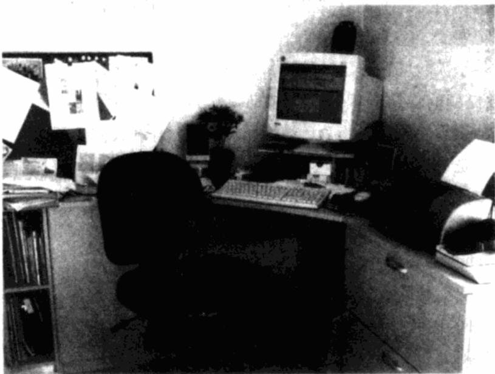
Study cues
- Turn a user table that only has age and occupation into a persona with a name and a "Tuesday morning" story. Eight sentences maximum.
- In your next group review, require everyone to say "I am now so-and-so" before commenting on a screen. Try it once and note which comments went unsaid because of it.
軟件觀念革命：交互設計精髓
Original title: About Face 2.0: The Essentials of Interaction Design
Author: Alan Cooper
Scope. This is an earlier Chinese edition of About Face, whose Chinese title ("A Revolution in Software Thinking") stresses a shift in how we think about software. The structure is: first understand users (implementation models and mental models, beginners through to intermediate users, qualitative research, personas, scenarios), then design behaviour and form, and only then details such as the mouse, controls, dialogue boxes and error messages, finally extending to the web and embedded systems. Use it to compare with the later 3rd and 4th editions: this volume puts "designing behaviour" and a large amount of interface detail in the same table of contents.
Main ideas
- Interaction design has its own working language. Building only by technology, marketing or tasks produces software that gradually gets abandoned.
- The model in the user's head and the implementation model inside the software are not the same thing; the interface should follow how people understand the task.
- Most people stay for a long time in the intermediate state between beginner and expert, and design should serve this group.
- After qualitative research, model with personas and goals, then use scenarios to turn goals into design.
- The detail chapters cover direct manipulation, selection, drag and drop, menus, toolbars, dialogue box etiquette, eliminating errors, and the web and embedded systems.
Methods
- Draw two models: how the system works inside, and how the user thinks it works. Write the interface copy to follow the second.
- Design the main path for intermediate users; give beginners just an on-ramp, and tuck expert features where they don't get in the way.
- Write each goal as a scenario, then decide which controls are needed, instead of filling the screen with menus first.
- In complex screens, unselected objects are sometimes drawn as outlines only, to reduce the rendering load; the selected state must still be distinguishable.
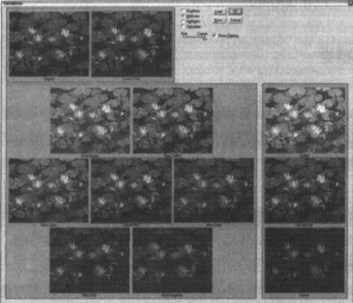
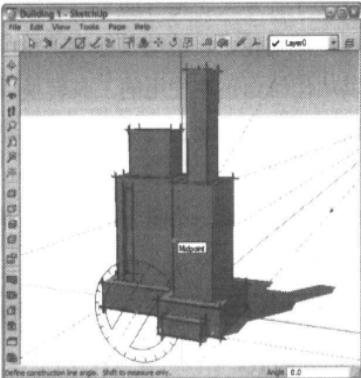
Study cues
- Choose a feature you use, and write two sentences on each: its implementation model (what the program actually does) and its mental model (what you think it does).
- Point out a command meant only for experts that sits in the way of the main path, and explain where it should be moved.
一目瞭然：Web 軟件顯性設計之路
Original title: Designing the Obvious: A Common Sense Approach to Web Application Design
Scope. This book defines "obvious design" as the quality that great software should have, and shows how to turn that quality into goals. Its framework is three statements: know what to build, know what makes it great, know the best way to build it. The chapters run from understanding users and then designing for activities and mental models, through building only what is enough, getting beginners started at once, error-proofing, consistency and reduction, to "improving matters more than innovating". The subject is web software, not marketing campaign pages.
Main ideas
- Obvious design requires software behaviour to match how people understand the task, rather than laying internal data structures straight onto the interface.
- "Understand users, then ignore them" means: after research, design for activities and mental models, and don't build every feature request into the interface. General-purpose features can be removed.
- The chapter on beginners discusses welcome screens, blank states, instructive hints, default values, card sorting and one-click actions, so people don't have to read a manual first.
- Errors can be handled with error-proofing devices (poka-yoke): prevention, detection, and turning an error into a chance for people to feel they did it right.
- Consistency is like stairs, whose rise and depth must stay steady; but the book also allows for "intelligent inconsistency". Improving an existing process takes priority over inventing a whole new metaphor.
Methods
- Open a project with three questions: what are we building, what is the standard for great, and what makes this way of building it good?
- Make a list of "general-purpose features" and ask of each one: if it were deleted, would the mainstream task fail?
- Design a welcome and defaults for first-time users: typeface, type size, image size and file name all need usable defaults. The book's example sets the file name to the page title by default.
- Check whether neighbouring steps are as predictable as stairs; break consistency only when there is a clear reason.
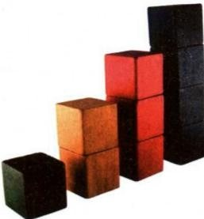
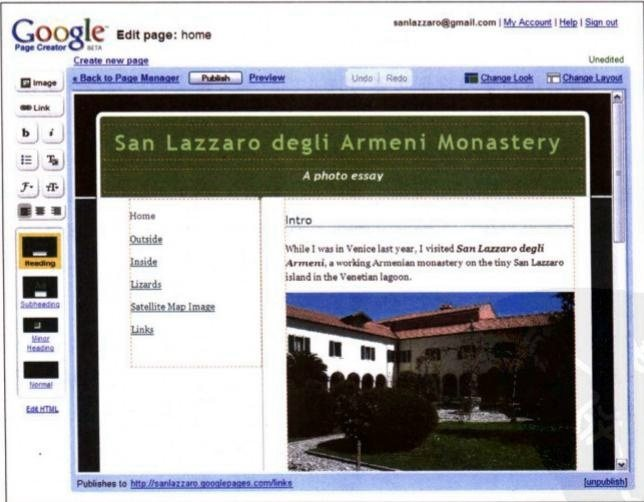
Study cues
- List three defaults you would hard-code for a form, and explain which step new users skip as a result.
- Find a wizard where "the rules change at every step", and using the stairs metaphor, point out the step where people are most likely to trip.
就這麼簡單：Web 開發中的可用性和用戶體驗
Scope. This is an introductory book written in Chinese that distinguishes graphic styling from user interface design. The author argues that many people describe the colour and position of a button as "ergonomically considered" when it is really just personal feeling, without asking users or testing. Real interface work makes a product easier to learn and easier to use, and helps people reach their goals. The book runs from definitions of terms to interaction in web interfaces. Its tone is like a long essay for colleagues, not a platform guideline.
Main ideas
- How an interface looks when finished is not the whole of user interface design. An exciting screen can still be hard to learn.
- Usability and user experience are about how people learn and how they reach their goals.
- Before calling yourself a UI designer, you should be able to show that your conclusions come from observation or testing, not just "I think this is convenient".
- Graphic design, programming and interface design are different roles. Being called an "artworker" is resented because it ignores behaviour and goals.
- The author leaves email and websites for further discussion, and encourages readers to bring their questions to specific cases and keep asking.
Methods
- For every visual decision, write down the user behaviour you are assuming, and note whether that assumption has been asked about or tested.
- Introduce your role in three sentences: which task you made shorter this time, which learning step you removed, and what users achieve when it succeeds.
- In reviews, ban the phrase "it's ergonomic" on its own. Ask for an observed action or error.
- Score "looks good" and "can be learned" in two separate columns, with evidence for both.
Study cues
- Choose a button you have designed and write down your reason at the time. Was it personal preference, or did it come from an observation?
- Using the author's definition, explain how the same screen can be eye-catching yet still hard to learn. Give an example you have used.
微交互：細節設計成就卓越產品
Original title: Microinteractions: Designing with Details
Author: Dan Saffer
Scope. Saffer takes apart the interactions in a product that do one small thing at a time: triggers, rules, feedback, and loops and modes. Norman's foreword uses a phone ringing at a concert, and Aperture throwing only an error with no repair steps when its data was corrupted, to show that details decide whether people are willing to keep using a product. This book does not deal with whole information architectures; it focuses on actions that happen within a few seconds.
Main ideas
- Even when the big picture is right, details can still frustrate people. Microinteractions are the moment-to-moment experience, not decoration.
- A microinteraction has a trigger (what starts it), rules (how it works), feedback (how people know what happened), and loops and modes (how it changes over time or with state).
- The fewer modes the better. When the same action means opposite things in "select mode" and "delete mode", mistakes are easy. Ideally there are no modes, or only one.
- Feedback should include the next step. If a message only says the data is corrupted and gives no repair steps, users have to search for help themselves.
- Rules can step in before people make a mistake. Gmail asks before sending whether you forgot an attachment; a USB plug, by contrast, makes people find the right orientation first.
Methods
- Pick a small action (adjusting volume, sending an email, plugging in a cable) and fill in the four boxes: trigger, rules, feedback, loops. Any empty box is design work still to do.
- Count how many modes the action has. If there is more than one, write down the pair of meanings people will confuse.
- When writing an error message, include an actionable next step, or a button that starts the repair.
- Find a rule like "a reminder before sending": check for one common omission before submission.
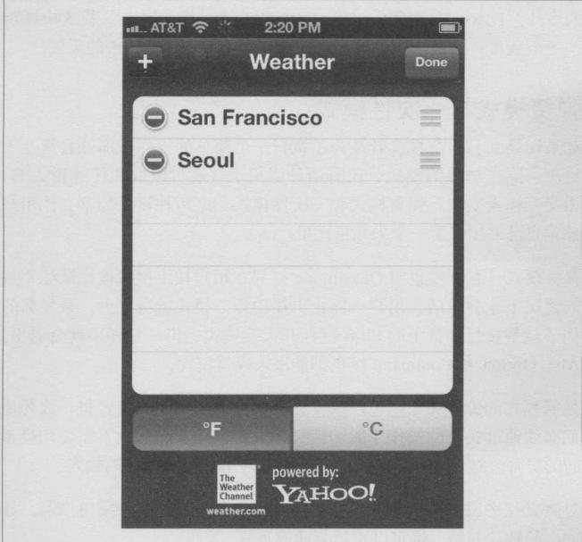
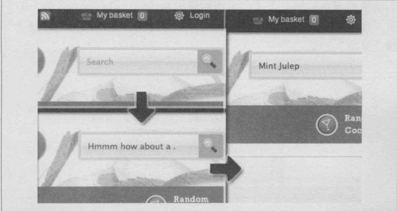
Study cues
- Analyse "dragging a file to the trash" with the four boxes: what triggers it, what are the rules, what is the feedback, and is there a second mode?
- Rewrite an error message that only says "failed", adding an action users can press next.
怦然心動：情感化交互設計指南
Original title: Seductive Interaction Design: Creating Playful, Fun, and Effective User Experiences
Author: Stephen P. Anderson
Scope. Anderson connects motivation, feeling and choice from the behavioural sciences to web products. He argues that being usable is not enough: an experience must pass through functional, reliable and usable, and then move towards an appeal that makes people want to stay. The stories in the book include how LinkedIn gets people to complete their profiles, how iLike gets people to name the artists they like, and how emotions change decisions to sign up, share and stay.
Main ideas
- The book starts from why people do things, what they feel and how they make particular choices, and only then asks how these principles can be built into interactions.
- Any product people engage with can take emotion into account, business software included.
- In the book, seduction is a set of observable behaviour designs, such as using small challenges to make people willing to keep filling in their details, rather than relying on explanatory text.
- He tries to turn research on things like faces on energy bills, and smell and memory, into emotional cues in the interface.
- Concrete cases include a restaurant bill that comes with a thank-you card marked "do not open", and Facebook reducing account deactivations by telling users at that moment that their friends will no longer be able to contact them.
Methods
- First check the product for "functional, reliable, usable". If these three layers don't hold up, don't add fun first.
- For a behaviour you want to happen (completing a profile, signing up, sharing), design a small challenge or a sentence that appears at the moment of decision, then see whether the data changes.
- When collecting psychology examples, write down the situation the original research studied, and which interface moment you plan to use it in.
- When reviewing a "fun" idea, ask which existing task it helps.
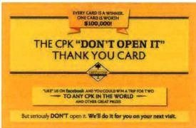
Study cues
- Choose a sign-up process and write one sentence that appears only when people are about to leave, explaining which feeling it targets.
- Apply the four layers "functional, reliable, usable, want to come back" to your assignment, and mark the layer that is currently weakest.
用戶體驗度量
Original title: Measuring the User Experience: Collecting, Analyzing, and Presenting Usability Metrics
Authors: Thomas Tullis, William Albert
Scope. Tullis and Albert worked on user experience at Fidelity Investments, and this book shows that experience can be measured. Examples include how long it takes to book a flight, how many errors people make when logging in, how many people manage to record the programme they want to watch, and how many people miss a link that needs only one click. Chapter 1 first deals with ten myths, for example that metrics are too slow, too expensive, useless for small improvements, unable to explain causes, less trustworthy than intuition, or unsuitable for new products. Use it after usability testing, to turn what you observed into numbers you can compare.
Main ideas
- Usability metrics include task success rate, time, errors, number of clicks or keystrokes, and attitudes such as frustration and delight.
- The value of metrics is in comparing options and iterations, not just in producing another opinion.
- Common myths are rebutted one by one: small improvements can be measured too; noisy numbers are still usable; new products also have behaviour you can measure.
- Combined goals can be reported to managers as "the percentage of participants who met all the set goals".
- Across iterations, the number of unique usability problems should fall; if it does not, the changes have missed the problems that matter most.
Methods
- For each test, define what counts as task success first, then record time and errors. Do not collect impressions only.
- Prepare one percentage for managers: how many people met the whole set of goals you wrote down in advance.
- For each round of revisions, list the "unique problems this round" and compare the count with the last round, rather than only comparing whether the screens look good.
- On a small budget, test the success rate and time for a single task first. That still counts as measurement.
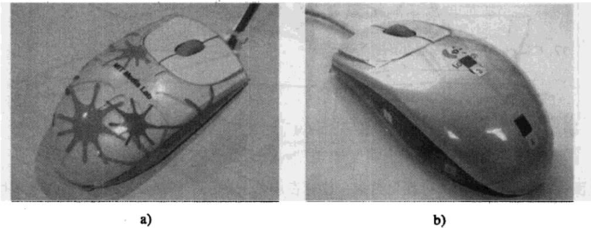
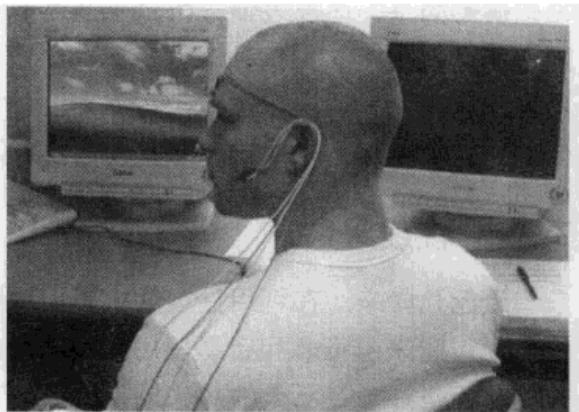
Study cues
- Set three measurable indicators for "finding office hours on the school website": success rate, time and number of errors. What counts as success?
- Suppose the first round has 12 unique problems and the second has 9. What else do you need to know before you can judge that the most important problems have been solved?
用戶體驗要素：以用戶為中心的產品設計（原書第 2 版）
Original title: The Elements of User Experience: User-Centered Design for the Web and Beyond, 2nd edition
Author: Jesse James Garrett
Scope. The 2nd edition extends the five-plane model from websites to products and services. The concepts are still strategy, scope, structure, skeleton and surface, but Garrett explains that over the past ten years these elements have been applied beyond the Web. The preface retells how the diagram suddenly took shape at a security checkpoint in Austin airport, and how teams online took it up as a shared vocabulary. This edition also describes pinning personas up in the office and using them to ask "Would this be useful to Janet?"
Main ideas
- The 2nd edition is no longer limited to websites; most examples still come from web pages, but the principles apply to products and services.
- "Designing for experience" puts use first. User experience is presented as a business opportunity, not just interface polish.
- The vocabulary of the five planes helps different disciplines work together. The author's original difficulty was that colleagues did not know what an information architect actually does.
- Personas should be concrete enough to pin on the wall. The book's questions are: Would this be useful to Janet? How would Frank react?
- The model came from an effort to gather confusing terminology into one diagram. The title uses "elements" to avoid "components", which sounded too technical.
Methods
- For a product that is not a website, still fill in all five planes, but rewrite the strategy plane as the goals for using this product, not "site objectives".
- Give your personas names and pin them up. Next to each important decision, note in one sentence how it affects that persona.
- In meetings with engineering and marketing, point to the plane you are talking about, so that not everything gets called "the interface".
- If the team only changes the visuals, ask them to show whether the skeleton and structure planes changed as well.
Study cues
- Choose a product that is not a website (a student card, a washing machine or a phone alarm) and write down what its strategy plane and surface plane are.
- Name two personas and write one sentence for each describing how they react to the same feature. The two sentences must differ.
眾妙之門：網站 UI 設計之道
Original title: The Smashing Book
Author: Smashing Magazine
Scope. This is the interface design volume of the Smashing Magazine anthology. It deals with the visible interface on screen: layout, shape, size, colour, contrast and texture. Techniques include using white space to show relationships, using rounded corners to define boundaries, using colour to carry meaning, using shadows to draw the eye back, and emphasising the core action. Fitts's law is used to explain why frequently used buttons should be large. Later, colour schemes are used to show how to make images stand out.
Main ideas
- The main purpose of the visible interface is to help people understand what an application can do and how to operate it. Appearance is only part of that.
- Elements placed close together read as related; labels placed above input fields are easier to scan from top to bottom than labels on the left.
- Size signals importance, and also how easy something is to click. The larger the clickable area, the faster the cursor reaches it.
- Colours carry meaning (red often means stop or error, green often means go or success), but you must consider culture and colour blindness, and use shape and texture as a second cue.
- Texture can provide affordance: raised ridges tell people "you can drag here". White space, rounded corners and shadows are used to group, draw boundaries and focus attention.
Methods
- When laying out a form, put the labels above the fields to cut down left-to-right eye jumps.
- Give the most frequent action a larger clickable area, and lower the contrast of the other actions.
- Every time you use colour to show a state, add one difference that is not colour (an icon or a shape), so that it still works for people with red-green colour blindness.
- Check whether a colour scheme is complementary, double complementary or tetradic, and see whether it separates the main image from the background.
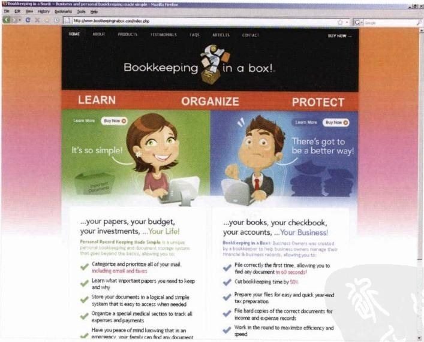
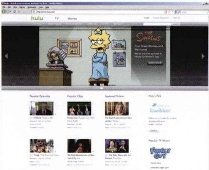
Study cues
- Revise a form sketch: move all the labels above the fields and make the main button larger. Write down how the eye's path has changed.
- Choose a red-green status indicator and add one distinction that does not rely on colour, so that colour-blind users can still tell the states apart.
瞬間之美：Web 界面設計如何讓用戶心動
Original title: Designing the Moment: Web Interface Design Concepts in Action
Author: Robert Hoekman, Jr.
Scope. Hoekman uses more than thirty stories, ordered the way people use a web application: the first impression in the first thirty seconds, searching, entering and editing data once they are further in, participation, and leaving. He calls his approach "thinking out loud", looking at one moment at a time. His previous book was about principles; this one puts those principles into the details of real interfaces, such as type size, sliders and video players.
Main ideas
- Online, people type, edit, search, upload, delete and share, and they also get distracted, make mistakes and change their minds. The interface should help them make decisions in those moments.
- The book is structured around a single visit: the thirty seconds after opening, going deeper, and leaving (for now or for good).
- The first-impressions chapter starts with page layout; search and participation come later.
- Details can strengthen or spoil the experience. In the CNN video player, the volume slider and the text are so small that even a mild vision problem makes them hard to use and read; yet the same player still has parts worth keeping.
- Type size can build hierarchy. Larger type stands out from a list, so the importance of the first link becomes obvious, and its colour also looks heavier.
Methods
- Write the task as a timeline: second 1, second 30, starting to type, leaving. Change only one element at each moment.
- Use "thinking out loud" to record your own hesitations, then decide what was missing at that moment.
- Check the size of interactive controls and of text, especially on sliders and video players.
- When adjusting type size, enlarge only one level, and see whether the first item in the list becomes too heavy as a result.
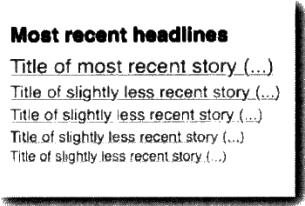
Study cues
- Open a web application you use and write down the three things you actually did in the first thirty seconds, and which of them made you pause.
- Find a slider or a small text label and explain whether it fails at "being visible" or at "being easy to hit".
破繭成蝶：用戶體驗設計師的成長之路
Scope. This is a career-growth book for user experience designers who are about to enter the field or have just started. It first separates design from art, then introduces the related roles, collaboration and career paths. User experience is defined as the subjective feeling of using a product; design, by contrast, must first solve a specific problem. Examples range from a Picasso painting and wireframes to power sockets, the fly printed on a urinal, and app icons whose purpose you cannot guess.
Main ideas
- Art can be read differently by everyone, or not understood at all; design must rationally solve a particular person's particular problem. Wireframes, flows and interaction specifications are the half-finished products of that rational process.
- Bad design often comes from drawing wireframes from imagination alone and treating design as personal creative work.
- The order in experience design is: solve the real problem, make the problem easier to solve, then leave an impression. Appearance is only one part of this.
- The book lists the qualities as: rigorous, aimed at a specific problem, never leaving people lost, and allowed to be playful. The lean way to get there is to observe daily life, use the product yourself and listen to feedback.
- If an icon only looks like the style of another product, people cannot guess what it does. Icons that focus on the product name (the book uses Facebook as an example) put recognition on the name.
Methods
- Before you start, write three sentences: who it is for, what problem it solves, and what people can get done when it succeeds. If you cannot write them, do not start drawing.
- Collect examples that "look clever but cannot actually be used", and work out whether each fails on the problem, the operation or only the form.
- When designing an icon, first make sure people can say what the product is, and only then talk about texture and finish.
- In terms of roles, be clear what interaction, visual and research work each deliver, so that no one person judges everything by artistic standards.
Study cues
- Describe your assignment in three sentences: who it is for, what it solves, and what gets done. If the second sentence is "make it look good", rewrite it as a specific difficulty.
- Sketch two icons: one recognised through the name, one through a metaphor. Ask classmates whether they can say what app each one is.
簡約至上：交互設計四策略
Original title: Simple and Usable Web, Mobile, and Interaction Design
Scope. This volume begins with "why can't setting up a printer be as simple as plugging in an appliance?" The author compares older set-ups, which meant reading a manual, flipping switches and installing drivers, with a new printer that asks once for the Wi-Fi password and then does the rest itself. The contents stress three kinds of users, explain why expert users should not define the product, and call for observation in the office, at home and outdoors. The four strategies are covered more fully in the illustrations of another volume; the sample of this one puts its effort into identifying mainstream users and writing the key points clearly.
Main ideas
- The standard of simplicity comes from a concrete set-up experience: fewer steps for people to do, not a thicker manual.
- The Flip camera, the Volkswagen Beetle and Twitter are given as examples of things that were simple and trustworthy, and so were adopted by huge numbers of people. Complex features become a burden that will not sell when the economy turns down.
- The same thing can feel exciting to experts and get in the way of mainstream users. The book's question is how technology moves away from experts and reaches most people.
- A key point can be described in two ways. If you cannot write it clearly, the difficulty is that the thing is genuinely hard to explain, and it needs rewriting.
- Observation should cover different settings: in the office, at home and outdoors, people face different constraints.
Methods
- Count the steps in an installation or set-up process. Aim for something close to "plug it in and it works", and write down every step that could be removed.
- List the features only experts would use, and mark that they must not appear on the mainstream user's default path.
- Describe the same key point in two ways (a one-line slogan and a short scenario). If both are vague, you have not yet understood the task.
- Observe the same product in at least two settings, and note how the environment changes what "simple" means.
Study cues
- Record the number of steps the last time you set up a new device, and circle two steps you would not have had to do if the product had done them itself.
- Describe "this feature is designed for mainstream users" once in a single sentence and once as a short scenario. Which version is more likely to make classmates think it is meant for experts?
網頁設計創意書
Original title: The Web Designer's Idea Book: The Ultimate Guide to Themes, Trends and Styles in Website Design
Scope. This book presents design patterns by type of website: blogs, forums, event sites, e-commerce, free scripts, churches, personal sites, design firms and photography sites. Each type starts with the expectations that kind of site must meet, then gives specific URLs. The blog section compares ways of highlighting the latest post; the forum section warns against changing things so much that visitors lose their way, while also removing the parts of the default layout that are not needed.
Main ideas
- If a blog highlights the latest post on its home page (large title, date, short summary), new visitors do not have to pick through a long list. NorthxEast, Veerle Pieters, Eleven3 and Design2.0 show different approaches in the book; the last simply shows the full text on the home page.
- Some blogs organise by topic rather than only by date, unlike the default of most blog engines.
- A forum must be distinctive and still match what people expect of a forum. Change too much and visitors get lost; keep the ugly default layout and the brand cannot be recognised.
- Successful forum examples remove elements they do not need and use layers of information to deal with thousands of posts: boards on the outside, and simpler pages once you go in.
- The chapters on site types focus on structure and trade-offs, and the pages often list URLs directly for comparison.
Methods
- Choose the site type first, and write down the three things users of that type expect to look for (the latest posts on a blog, the boards on a forum, prices in a shop). These must not be hidden.
- Run a hierarchy experiment for the "latest post" on a blog home page: enlarge only the title, or add a summary and date, and see whether people still need to scroll to find where the new content is.
- Each time you add a board to a forum, check that the home page still shows the topics within one screen, rather than laying out seventy thousand posts flat.
- When studying examples, open the URLs in the book and record only the structure (where the latest posts go, how boards are layered). Do not copy the skin.
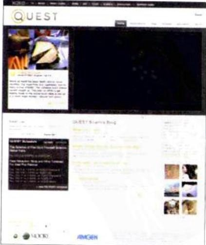
Study cues
- Draw a blog home page and mark the latest post, the list of older posts and the categories. Which area can someone point to within three seconds?
- For a forum with many boards, which level would you put on the home page, and which would only appear once someone enters a board?
認知與設計：理解 UI 設計準則
Original title: Designing with the Mind in Mind: Simple Guide to Understanding User Interface Design Rules
Scope. This volume also starts from the idea that "guidelines are not recipes", and goes on to the direct effects of perception on interfaces: we see according to our expectations, experience, surroundings and goals. The design implications include avoiding ambiguity, staying consistent, understanding goals, and making screens fit the way vision picks out structure. The illustrations apply these points to colour blindness and hard-to-read layouts. Use it to check charts and body text, not to memorise another list of guidelines.
Main ideas
- Guidelines come from cognition, which is why the lists by Shneiderman and by Nielsen and Molich look alike: consistency, error prevention, reversibility, and letting people feel in control.
- Conflicting goals need trade-offs, for example a screen that is bright yet saves power, or features that are powerful yet keep the system simple.
- Experience and surroundings rewrite what you see. With the same interface, people with different goals ignore different areas.
- If a chart separates series only by certain colours, some users cannot tell them apart. The book uses a MoneyDance chart as an example.
- Long passages set centred on a patterned background stack several flaws together and make body text very hard to read.
Methods
- When drawing charts, do not rely on red and green alone to separate series. Add labels, line styles or shapes, and check once with a colour-blindness simulator.
- Use aligned blocks of text and plain backgrounds for body text. Keep centring for short headings.
- For each screen, write down the user's goal at that moment, then remove decoration that competes with that goal for attention.
- When two guidelines conflict, write down which perceptual condition you sacrificed (for example contrast or reversibility), rather than just saying "keep it simple".
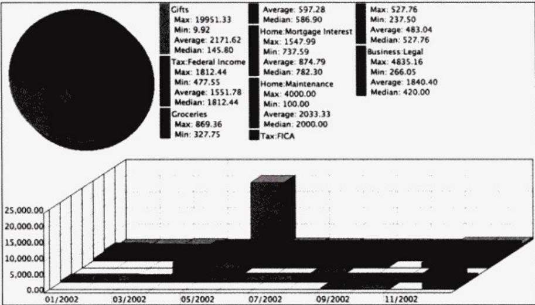
Study cues
- Redraw a two-series chart: if the viewer cannot tell red from green, what second cue will you use?
- Find a long centred passage, set it ranged left and remove the patterned background, then write down which change did more for readability.
認知與設計：理解 UI 設計準則（第 2 版）
Original title: Designing with the Mind in Mind: Simple Guide to Understanding User Interface Design Guidelines, 2nd edition
Author: Jeff Johnson
Scope. In the 2nd edition Johnson again explains the perception and cognition behind the guidelines, and Norman's comment stresses that it is about how the mind works, not just a list of rules. New emphases include perceptual bias, priming, familiar frames and habits. The illustrations use Escher's figure-ground reversals, and a chart of web technology evolving along a horizontally scrolling timeline, to show how attention and time can be designed. Read it after the 1st edition's point that "expectations shape perception", to see how habits and priming preset what people will see.
Main ideas
- Guidelines work because the senses and the brain have stable limits. Knowing those limits lets you judge which guideline holds up better when guidelines conflict.
- Perception is biased: experience, concepts that have just been primed, familiar frames and habits all lead people to an interpretation before they look closely.
- Figure and ground can swap. In Escher's pictures, subject and background change places as attention shifts; if an interface's hierarchy is unclear, people will also mistake what the main subject is.
- A timeline does not have to be animated. The book's chart of web evolution shows the changes from 1993 to 2012 by scrolling horizontally along a time axis.
- The 2nd edition is set against the background of human-computer interaction gradually moving away from purely experience-based rules of thumb: principles can be used to work out new judgements.
Methods
- When designing a screen, write down the frame you assume users are already used to (a form, a timeline, a dialog box). If that frame is missing, you will need to teach it.
- Check figure and ground: is the main action being upstaged by a background pattern? If necessary, darken the background or remove it.
- When showing time, try horizontal scrolling or a static axis first. Do not assume it has to be animated.
- Before a redesign, list users' habitual actions. If the new design breaks a habit, leave a recognisable entry point in the old position.
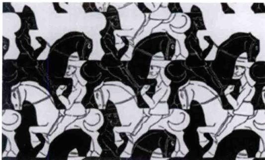
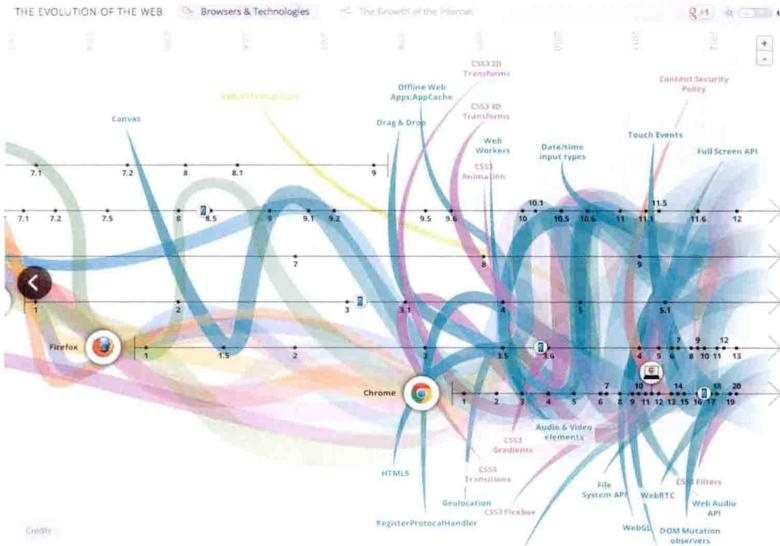
Study cues
- Find a screen where the background is more eye-catching than the buttons, and write down which area people might mistake for the main subject.
- Use one horizontal timeline (no animation) to lay out four years of your design study, keeping only one event for each year.
贏在用戶：Web 人物角色創建和應用實踐指南
Original title: The User Is Always Right: A Practical Guide to Creating and Using Personas for the Web
Authors: Steve Mulder, Ziv Yaar
Scope. The contents of this volume set out all five steps of Chapter 1, including step four: research findings must be actionable. The sample persona is Francis, a first-time home buyer. The focus moves from "creating a vivid person" to "giving business strategy a single united front". At one end, the illustrations show how clusters become personas; at the other, how personas keep a good strategy from dying when everyone goes their own way in execution.
Main ideas
- The five steps form a chain: business results depend on users, you are not your user, you must have direct contact, research must lead to something that can be built, and decisions must be based on those results.
- A persona card records a personal description, user goals and business goals together. Francis comes to the site for things to do with buying a home; the company wants her to complete particular actions.
- Clustering only produces segments; a name, a photo and a story turn the spreadsheet into a person people can discuss.
- Getting everyone to face the same customer and the same opportunity raises the chance that a strategy is actually carried out. Many strategies fail for lack of a united front.
- The authors still call personas a developing tool. In practice they need to make it into meetings and decisions, not stop at a poster.
Methods
- At the end of research, do an "actionable" check: does each finding correspond to a design or business decision? Leave findings that do not correspond out of the persona for now.
- Split a Francis-style card into two columns: what she wants to get done, and what we want her to do. Make it explicit when the two columns conflict.
- Use personas to open business discussions, and require every strategy to state which goal of which persona it serves.
- Before a cluster table becomes a poster, delete the columns that cannot guide this quarter's decisions.
Study cues
- Write three research findings, and after each add "so the design decision to change this week is...". Leave the one you cannot write a decision for out of the persona for now.
- Write one sentence each for a persona's "user goal" and "business goal". If the two conflict, which one would you satisfy first in the interface?
體驗·度：簡單可依賴的用戶體驗（彩版）
Scope. This is a case-study book by Baidu's user experience team, and the preface discusses how designers should understand the company's strengths. The main text treats experience as a complete chain: the company's strengths decide the product direction, the direction decides the features, and only then do the features decide the interaction and visuals, followed by operations. The main case is how Baidu Maps cleaned up its interface: emphasising search, tucking away advanced features, using icons that are clear in meaning, and keeping the visuals fresh. Read it to see how a large product cuts features, not how to add a new module.
Main ideas
- Product direction comes from needs that both the company and its users cannot do without. Building your distinctive features on a rival's strength rarely wins. The book uses red packets as an example: Alipay did them first, but WeChat made them take off through people's personal networks.
- The hardest part of features is cutting them. If a news app keeps adding things, from weather all the way to sharing and comments, the discussion drifts away from the news itself.
- Side drawers, tabs and grids are not absolutely right or wrong: when there are many items that are rarely switched, when items need frequent switching, or when each entry is independent, each of the three frameworks suits one of these cases.
- Search is Baidu's strength, so many of its products have search suggestions and history; but how prominent the search entry is depends on how much that product relies on search. Maps, reading and travel are not the same.
- The maps case turns "make the complex simple, be efficient, simplicity measured on the road" into a method: a clean screen, search first, advanced features tucked away, and precise icons.
Methods
- Before writing features, write down the company's strengths and the product direction. Features unrelated to the direction stay out of this version, even if users say they want them.
- When choosing a navigation framework, write down how often people switch and whether the entries are independent, then decide between side drawer, tabs or grid.
- Do not give search completely different interactions across one company's products; then strengthen or weaken the entry point according to how much this product depends on search.
- Use cases like maps for road testing: walk through the main task once on a real road, and note which advanced feature could be tucked away.
Study cues
- For a news product, list four features "users might say they want", then cut the two that are unrelated to the product direction and give your reasons.
- If Baidu Maps tucks away its advanced features and keeps search, what does the main task become? Write it in one sentence for someone on foot.